기타 화학제품 제조업
업종 참고: RS 평균 57/99(업종 중 상위 44%) · 오늘 신호 3건 · 업종 평균이 코스피 대비 +15.5%p(126일), 종목별 편차 ±34%p
🧪 자체 섹터 분류(실험적, 참고용): 한샘·한일시멘트 등 17종목 (업종 혼재)
섹터 내 RS 순위: 3/17위 (RS 71/99)
섹터 1~3위: 한샘(92), 한일시멘트(89), 강남제비스코(71)
※ 자체 상관관계 계산(최근 1년) — 검증 시 기준업종 11개 중 8개 정확. 주 단위로 구성종목이 일부 바뀔 수 있음(주간 일치도 실측 0.53)
종가 13,440 · 거래대금 3.5억
거래량비 3.5x맨스필드RS +6.8
손절 12,499 | 목표 16,262 | 수량 744주
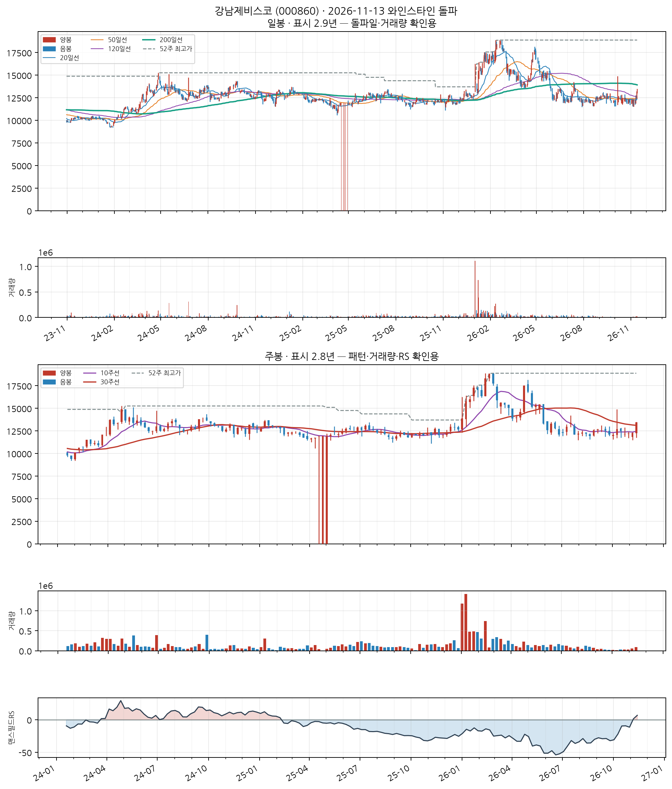
📐 차트 패턴: 약한 유사 — 이중바닥 돌파 확인 확신 낮음 판정 기준(PDF)
두 저점(12,100/11,950) 뒤 중간 고점 13,370를 종가로 넘었다.
가장 강한 반증 선행 추세: 선행 추세가 상승(+46.0%) — 상승 중 눌림일 수 있어 반전형 전제가 없다
경쟁 후보·더 단순한 설명 더 단순한 설명: 선행 하락이 없어 반전형이 아니라 상승 추세 중 눌림(조정)일 수 있다
측정표 (주봉 종가 기준, 판정일 2026-11-13 이후 데이터 미사용)
조건별 판정
- 미충족 선행 추세 — 선행 추세가 상승(+46.0%) — 상승 중 눌림일 수 있어 반전형 전제가 없다
- 충족 두 저점 일치 — 저점 차이 1.2% ≤ 6% · 두 번째 저점이 첫 저점을 언더컷(IBD 선호)
- 충족 중간 반등 — 중간 반등 11.9% ≥ 8%
- 충족 기간 — 베이스 29주 ≥ 7주
- 충족 깊이 — 베이스 깊이 31.8% ≤ 40%
- 충족 저점2 매도 약화 — 저점2 부근 거래량 = 저점1 부근의 0.73배
- 충족 최근성 — 돌파 주(2026-11-13)가 0주 전
- 충족 넥라인 돌파 — 2026-11-13 주 종가 13,440 > 확인선
- 충족 돌파 거래량 — 돌파 주 거래량 = 직전 10주 평균의 2.74배
추가로 필요한 데이터 장중 고저 기준 깊이(여기 수치는 주봉 종가 기준)
패턴만으로 매수 추천이나 목표 달성 확률을 만들지 않습니다. 수치 기준은 잠정치이며 라벨 데이터로 검증되지 않았습니다.
MH머트리얼즈 (001080)
신규
KOSPI
1차 철강 제조업
업종 참고: RS 평균 47/99(업종 중 상위 67%) · 오늘 신호 3건 · 업종 평균이 코스피 대비 +4.8%p(126일), 종목별 편차 ±22%p
🧪 자체 섹터 분류(실험적, 참고용): 골프존홀딩스·인피니트헬스케어 등 10종목 (업종 혼재)
섹터 내 RS 순위: 5/10위 (RS 74/99)
섹터 1~3위: 골프존홀딩스(98), 인피니트헬스케어(95), 대원강업(80)
※ 자체 상관관계 계산(최근 1년) — 검증 시 기준업종 11개 중 8개 정확. 주 단위로 구성종목이 일부 바뀔 수 있음(주간 일치도 실측 0.53)
종가 4,770 · 거래대금 3.2억
거래량비 3.7x맨스필드RS +16.2
손절 4,436 | 목표 5,772 | 수량 2,096주
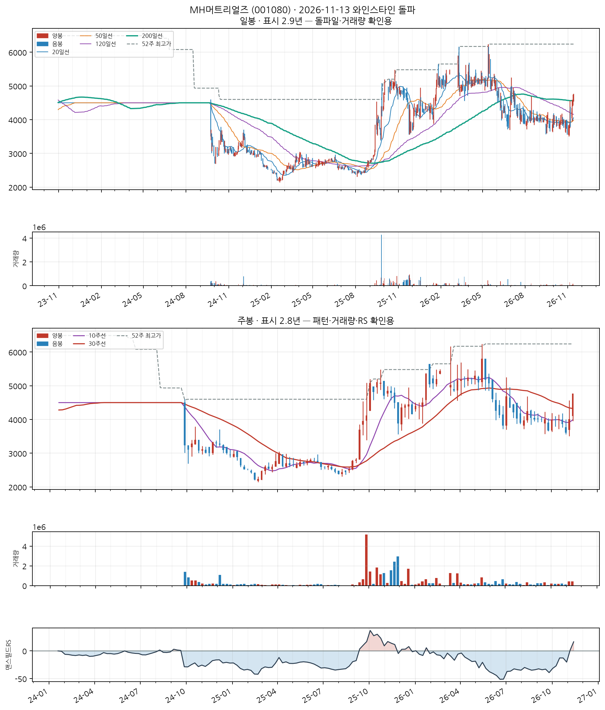
📐 차트 패턴: 약한 유사 — 이중바닥 돌파 확인 확신 낮음 판정 기준(PDF)
두 저점(3,820/3,605) 뒤 중간 고점 4,685를 종가로 넘었다.
가장 강한 반증 선행 추세: 선행 추세가 상승(+21.1%) — 상승 중 눌림일 수 있어 반전형 전제가 없다
경쟁 후보·더 단순한 설명 더 단순한 설명: 선행 하락이 없어 반전형이 아니라 상승 추세 중 눌림(조정)일 수 있다
측정표 (주봉 종가 기준, 판정일 2026-11-13 이후 데이터 미사용)
조건별 판정
- 미충족 선행 추세 — 선행 추세가 상승(+21.1%) — 상승 중 눌림일 수 있어 반전형 전제가 없다
- 충족 두 저점 일치 — 저점 차이 5.6% ≤ 6% · 두 번째 저점이 첫 저점을 언더컷(IBD 선호)
- 충족 중간 반등 — 중간 반등 30.0% ≥ 8%
- 충족 기간 — 베이스 26주 ≥ 7주
- 충족 깊이 — 베이스 깊이 37.8% ≤ 40%
- 충족 저점2 매도 약화 — 저점2 부근 거래량 = 저점1 부근의 0.69배
- 충족 최근성 — 돌파 주(2026-11-13)가 0주 전
- 충족 넥라인 돌파 — 2026-11-13 주 종가 4,770 > 확인선
- 충족 돌파 거래량 — 돌파 주 거래량 = 직전 10주 평균의 1.97배
추가로 필요한 데이터 장중 고저 기준 깊이(여기 수치는 주봉 종가 기준)
패턴만으로 매수 추천이나 목표 달성 확률을 만들지 않습니다. 수치 기준은 잠정치이며 라벨 데이터로 검증되지 않았습니다.
도로 화물 운송업
업종 참고: RS 평균 66/99(업종 중 상위 20%) · 오늘 신호 2건 · 업종 평균이 코스피 대비 +17.6%p(126일), 종목별 편차 ±13%p
🧪 자체 섹터 분류(실험적, 참고용): 항공 여객 운송업 (한진칼·제주항공 등 11종목)
섹터 내 RS 순위: 8/11위 (RS 88/99)
섹터 1~3위: 한진칼(98), 제주항공(96), 진에어(95)
※ 자체 상관관계 계산(최근 1년) — 검증 시 기준업종 11개 중 8개 정확. 주 단위로 구성종목이 일부 바뀔 수 있음(주간 일치도 실측 0.53)
종가 19,210 · 거래대금 117억
거래량비 14.5x맨스필드RS +16.9
손절 17,865 | 목표 23,244 | 수량 520주
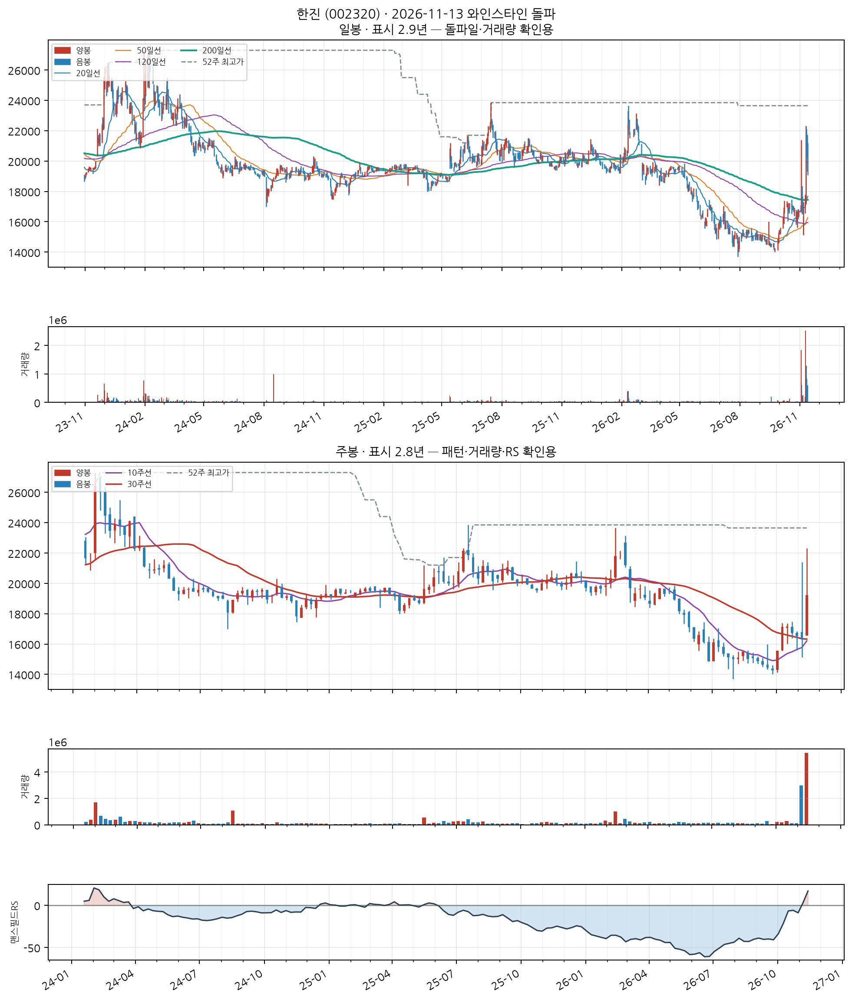
📐 차트 패턴: 약한 유사 — 컵위드핸들 형성 중 확신 낮음 판정 기준(PDF)
컵 구조(38주·깊이 32.3%)는 있으나 핸들이 아직 없다 — 형성 중.
가장 강한 반증 베이스 거래량 수축: 컵 구간 평균 = 직전 38주 평균의 2.05배
경쟁 후보·더 단순한 설명 없음
측정표 (주봉 종가 기준, 판정일 2026-11-13 이후 데이터 미사용)
조건별 판정
- 부분충족 선행 추세 — 선행 상승 +8.9% — +20%에 못 미침
- 충족 기간 — 컵 38주 (기준 7~65주)
- 충족 깊이 — 컵 깊이 32.3% (기준 12%~33%)
- 부분충족 림 대칭 — 좌우 림 차이 12.5% — 12% 초과
- 부분충족 U자 모양 — 바닥 형태(3주 중앙값 평활): 직선 V 템플릿 오차 0.159 vs 포물선 U 템플릿 오차 0.133 → 치우침 +0.026 (V=−0.167·U=+0.167, 기각 ≤-0.05·충족 ≥+0.05) · 바닥 중심 위치 70% — V와 U 사이 — 둥근 바닥의 증거가 약함
- 미충족 베이스 거래량 수축 — 컵 구간 평균 = 직전 38주 평균의 2.05배
- 판정불가 핸들 — 오른쪽 림 이후 봉이 없어 핸들 미형성
- 충족 최근성 — 마지막 구조 피벗(2026-11-13)이 0주 전
- 미충족 피벗 돌파 — 종가가 아직 확인선 위로 안 올라옴(+0.0%)
- 판정불가 돌파 거래량 — 돌파 전
추가로 필요한 데이터 장중 고저 기준 깊이(여기 수치는 주봉 종가 기준)
패턴만으로 매수 추천이나 목표 달성 확률을 만들지 않습니다. 수치 기준은 잠정치이며 라벨 데이터로 검증되지 않았습니다.
특수 목적용 기계 제조업
업종 참고: RS 평균 46/99(업종 중 상위 68%) · 오늘 신호 3건 · 업종 평균이 코스닥 대비 +16.2%p(126일), 종목별 편차 ±43%p
🧪 자체 섹터 분류(실험적, 참고용): 자이에스앤디·지엔씨에너지 등 29종목 (업종 혼재)
섹터 내 RS 순위: 5/29위 (RS 66/99)
섹터 1~3위: 자이에스앤디(98), 지엔씨에너지(97), 삼성E&A(96)
※ 자체 상관관계 계산(최근 1년) — 검증 시 기준업종 11개 중 8개 정확. 주 단위로 구성종목이 일부 바뀔 수 있음(주간 일치도 실측 0.53)
종가 7,170 · 거래대금 20억
거래량비 8.3x맨스필드RS +17.9
손절 6,668 | 목표 8,676 | 수량 1,394주
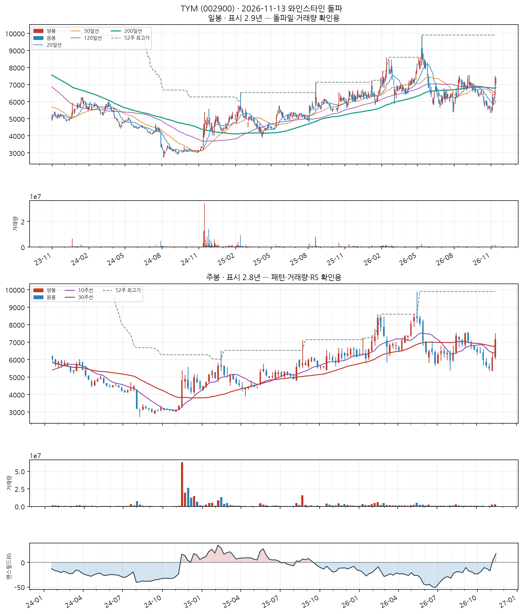
📐 차트 패턴: 약한 유사 — 이중바닥 형태 완성·미돌파 확신 낮음 판정 기준(PDF)
W 형태는 있으나 중간 고점 7,520를 아직 넘지 못했다.
가장 강한 반증 선행 추세: 선행 추세가 상승(+44.8%) — 상승 중 눌림일 수 있어 반전형 전제가 없다
경쟁 후보·더 단순한 설명 더 단순한 설명: 선행 하락이 없어 반전형이 아니라 상승 추세 중 눌림(조정)일 수 있다
측정표 (주봉 종가 기준, 판정일 2026-11-13 이후 데이터 미사용)
조건별 판정
- 미충족 선행 추세 — 선행 추세가 상승(+44.8%) — 상승 중 눌림일 수 있어 반전형 전제가 없다
- 충족 두 저점 일치 — 저점 차이 4.8% ≤ 6% · 두 번째 저점이 첫 저점을 언더컷(IBD 선호)
- 부분충족 중간 반등 — 중간 반등 36.7% — 30%를 넘어 W가 아니라 독립된 두 파동일 수 있음
- 충족 기간 — 베이스 27주 ≥ 7주
- 충족 깊이 — 베이스 깊이 34.8% ≤ 40%
- 부분충족 저점2 매도 약화 — 저점2 부근 거래량 = 저점1 부근의 1.18배
- 충족 최근성 — 마지막 구조 피벗(2026-10-30)이 2주 전
- 미충족 넥라인 돌파 — 종가가 아직 확인선 위로 안 올라옴(-4.7%)
- 판정불가 돌파 거래량 — 돌파 전
추가로 필요한 데이터 장중 고저 기준 깊이(여기 수치는 주봉 종가 기준)
패턴만으로 매수 추천이나 목표 달성 확률을 만들지 않습니다. 수치 기준은 잠정치이며 라벨 데이터로 검증되지 않았습니다.
건물 건설업
업종 참고: RS 평균 68/99(업종 중 상위 16%) · 오늘 신호 2건 · 업종 평균이 코스피 대비 +38.3%p(126일), 종목별 편차 ±64%p
🧪 자체 섹터 분류(실험적, 참고용): 소프트웨어 개발 및 공급업 (금호건설·지니언스 등 28종목)
섹터 내 RS 순위: 1/28위 (RS 99/99)
섹터 1~3위: 금호건설(99), 지니언스(99), 안랩(98)
※ 자체 상관관계 계산(최근 1년) — 검증 시 기준업종 11개 중 8개 정확. 주 단위로 구성종목이 일부 바뀔 수 있음(주간 일치도 실측 0.53)
종가 11,210 · 거래대금 986억
거래량비 3.4x맨스필드RS +75.4
손절 10,425 | 목표 13,564 | 수량 892주
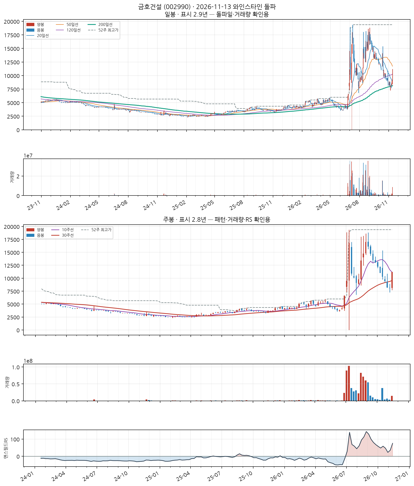
📐 차트 패턴 판정: 후보 없음 후보 없음 판정 기준(PDF)
세 패턴 모두 필수 조건을 채운 후보가 없다(가장 가까운 이중바닥 후보: 두 저점 일치: 저점 차이 34.5% — 같은 지지대로 보기 어려움(10% 초과)).
가장 강한 반증 이중바닥: 두 저점 일치: 저점 차이 34.5% — 같은 지지대로 보기 어려움(10% 초과); 컵위드핸들: 핸들: 핸들 저점 9,440가 컵 중간값 13,065 아래 — 핸들이 아니라 컵 재하락
경쟁 후보·더 단순한 설명 더 단순한 설명: 최근 26주 상승 추세 지속(+144.5%) — 베이스 없음
추가로 필요한 데이터 장중 고저 기준 깊이(여기 수치는 주봉 종가 기준)
패턴만으로 매수 추천이나 목표 달성 확률을 만들지 않습니다. 수치 기준은 잠정치이며 라벨 데이터로 검증되지 않았습니다.
전자부품 제조업
업종 참고: RS 평균 46/99(업종 중 상위 70%) · 오늘 신호 7건 · 업종 평균이 코스닥 대비 +12.7%p(126일), 종목별 편차 ±32%p
🧪 자체 섹터 분류(실험적, 참고용): 인텍플러스·유니퀘스트 등 30종목 (업종 혼재)
섹터 내 RS 순위: 11/30위 (RS 84/99)
섹터 1~3위: 인텍플러스(99), 유니퀘스트(98), 타이거일렉(98)
※ 자체 상관관계 계산(최근 1년) — 검증 시 기준업종 11개 중 8개 정확. 주 단위로 구성종목이 일부 바뀔 수 있음(주간 일치도 실측 0.53)
종가 91,400 · 거래대금 1,242억
거래량비 2.1x맨스필드RS +55.3
손절 85,002 | 목표 110,594 | 수량 109주
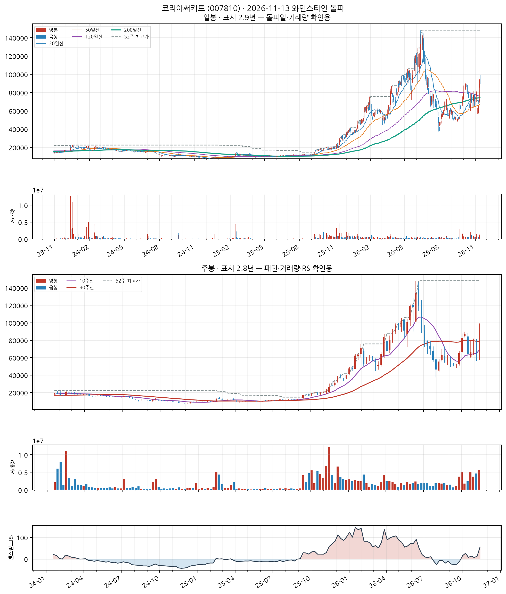
📐 차트 패턴: 약한 유사 — 역헤드앤숄더 돌파 확인 확신 낮음 판정 기준(PDF)
세 저점(머리 46,450) 뒤 넥라인(73,188, 2026-11-13)을 종가로 넘었다.
가장 강한 반증 선행 추세: 선행 추세가 상승(+195.2%) — 상승 중 눌림일 수 있어 반전형 전제가 없다
경쟁 후보·더 단순한 설명 더 단순한 설명: 선행 하락이 없어 반전형이 아니라 상승 추세 중 눌림(조정)일 수 있다
측정표 (주봉 종가 기준, 판정일 2026-11-13 이후 데이터 미사용)
조건별 판정
- 미충족 선행 추세 — 선행 추세가 상승(+195.2%) — 상승 중 눌림일 수 있어 반전형 전제가 없다
- 충족 머리 깊이 — 양 어깨 대비 최소 9.6% ≥ 3.5%
- 부분충족 어깨 대칭 — 어깨 높이차 17.6% — 15% 초과
- 충족 기간 — 어깨 간 34주 ≥ 6주
- 충족 시간 대칭 — 머리 좌우 기간 비 0.70
- 부분충족 넥라인 기울기 — 주당 -2.1% — 기울기 큼
- 부분충족 오른쪽 어깨 매도 약화 — 오른쪽 어깨 부근 거래량 = 머리 부근의 2.84배
- 충족 최근성 — 돌파 주(2026-11-13)가 0주 전
- 충족 넥라인 돌파 — 2026-11-13 주 종가 91,400 > 확인선
- 충족 돌파 거래량 — 돌파 주 거래량 = 직전 10주 평균의 1.87배
추가로 필요한 데이터 장중 고저 기준 깊이(여기 수치는 주봉 종가 기준)
패턴만으로 매수 추천이나 목표 달성 확률을 만들지 않습니다. 수치 기준은 잠정치이며 라벨 데이터로 검증되지 않았습니다.
한올바이오파마 (009420)
신규
KOSPI
의약품 제조업
업종 참고: RS 평균 56/99(업종 중 상위 45%) · 오늘 신호 6건 · 업종 평균이 코스피 대비 +9.5%p(126일), 종목별 편차 ±19%p
🧪 자체 섹터 분류(실험적, 참고용): 자연과학 및 공학 연구개발업 (한올바이오파마·프로티나 등 30종목)
섹터 내 RS 순위: 1/30위 (RS 95/99)
섹터 1~3위: 한올바이오파마(95), 프로티나(95), 디앤디파마텍(38)
※ 자체 상관관계 계산(최근 1년) — 검증 시 기준업종 11개 중 8개 정확. 주 단위로 구성종목이 일부 바뀔 수 있음(주간 일치도 실측 0.53)
종가 51,300 · 거래대금 143억
거래량비 4.8x맨스필드RS +13.9
손절 47,709 | 목표 62,073 | 수량 194주
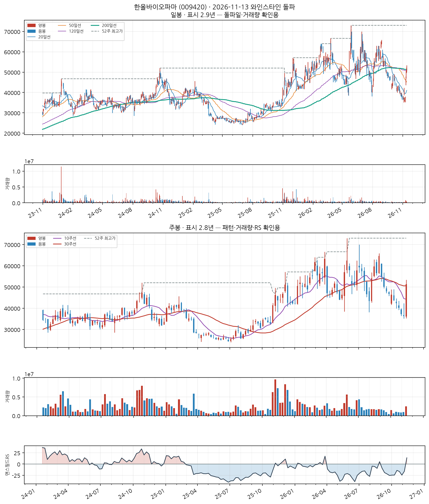
📐 차트 패턴 판정: 후보 없음 후보 없음 판정 기준(PDF)
세 패턴 모두 필수 조건을 채운 후보가 없다(가장 가까운 컵위드핸들 후보: 림 대칭: 좌우 림 차이 20.6% — 오른쪽 림이 낮음, 20% 초과).
가장 강한 반증 컵위드핸들: 림 대칭: 좌우 림 차이 20.6% — 오른쪽 림이 낮음, 20% 초과; 이중바닥: 두 저점 일치: 저점 차이 16.5% — 같은 지지대로 보기 어려움(10% 초과)
경쟁 후보·더 단순한 설명 더 단순한 설명: 최근 26주 상승 추세 지속(+10.7%) — 베이스 없음
추가로 필요한 데이터 장중 고저 기준 깊이(여기 수치는 주봉 종가 기준)
패턴만으로 매수 추천이나 목표 달성 확률을 만들지 않습니다. 수치 기준은 잠정치이며 라벨 데이터로 검증되지 않았습니다.
시멘트, 석회, 플라스터 및 그 제품 제조업
업종 참고: RS 평균 64/99(업종 중 상위 23%) · 오늘 신호 1건 · 업종 평균이 코스피 대비 +15.0%p(126일), 종목별 편차 ±20%p
🧪 자체 섹터 분류(실험적, 참고용): 계룡건설·IPARK현대산업개발 등 23종목 (업종 혼재)
섹터 내 RS 순위: 5/23위 (RS 79/99)
섹터 1~3위: 계룡건설(93), IPARK현대산업개발(92), 금호타이어(91)
※ 자체 상관관계 계산(최근 1년) — 검증 시 기준업종 11개 중 8개 정확. 주 단위로 구성종목이 일부 바뀔 수 있음(주간 일치도 실측 0.53)
종가 3,530 · 거래대금 14억
거래량비 2.1x맨스필드RS +29.9
손절 3,283 | 목표 4,271 | 수량 2,832주
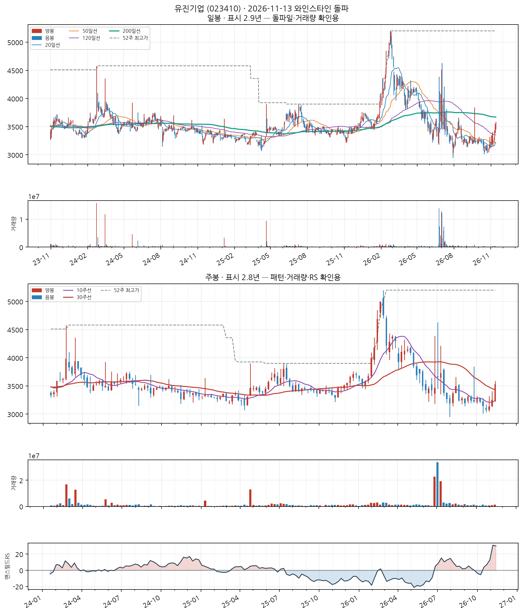
📐 차트 패턴: 약한 유사 — 이중바닥 돌파 확인 확신 낮음 판정 기준(PDF)
두 저점(3,185/3,075) 뒤 중간 고점 3,495를 종가로 넘었다.
가장 강한 반증 선행 추세: 선행 추세가 상승(+6.3%) — 상승 중 눌림일 수 있어 반전형 전제가 없다
경쟁 후보·더 단순한 설명 더 단순한 설명: 선행 하락이 없어 반전형이 아니라 상승 추세 중 눌림(조정)일 수 있다
측정표 (주봉 종가 기준, 판정일 2026-11-13 이후 데이터 미사용)
조건별 판정
- 미충족 선행 추세 — 선행 추세가 상승(+6.3%) — 상승 중 눌림일 수 있어 반전형 전제가 없다
- 충족 두 저점 일치 — 저점 차이 3.5% ≤ 6% · 두 번째 저점이 첫 저점을 언더컷(IBD 선호)
- 충족 중간 반등 — 중간 반등 13.7% ≥ 8%
- 충족 기간 — 베이스 18주 ≥ 7주
- 충족 깊이 — 베이스 깊이 17.4% ≤ 40%
- 충족 저점2 매도 약화 — 저점2 부근 거래량 = 저점1 부근의 0.42배
- 충족 최근성 — 돌파 주(2026-11-13)가 0주 전
- 충족 넥라인 돌파 — 2026-11-13 주 종가 3,530 > 확인선
- 충족 돌파 거래량 — 돌파 주 거래량 = 직전 10주 평균의 1.47배
추가로 필요한 데이터 장중 고저 기준 깊이(여기 수치는 주봉 종가 기준)
차트 오버레이 탐지기: 🧪 이중바닥 유사(실험적) — 후보 생성기일 뿐, 위 판정과 독립
패턴만으로 매수 추천이나 목표 달성 확률을 만들지 않습니다. 수치 기준은 잠정치이며 라벨 데이터로 검증되지 않았습니다.
기반조성 및 시설물 축조관련 전문공사업
업종 참고: RS 평균 데이터 부족 · 오늘 신호 1건
🧪 자체 섹터 분류(실험적, 참고용): 항공 여객 운송업 (한진칼·제주항공 등 11종목)
섹터 내 RS 순위: 6/11위 (RS 93/99)
섹터 1~3위: 한진칼(98), 제주항공(96), 진에어(95)
※ 자체 상관관계 계산(최근 1년) — 검증 시 기준업종 11개 중 8개 정확. 주 단위로 구성종목이 일부 바뀔 수 있음(주간 일치도 실측 0.53)
종가 18,850 · 거래대금 1.2억
거래량비 3.0x맨스필드RS +20.2
손절 17,530 | 목표 22,808 | 수량 530주
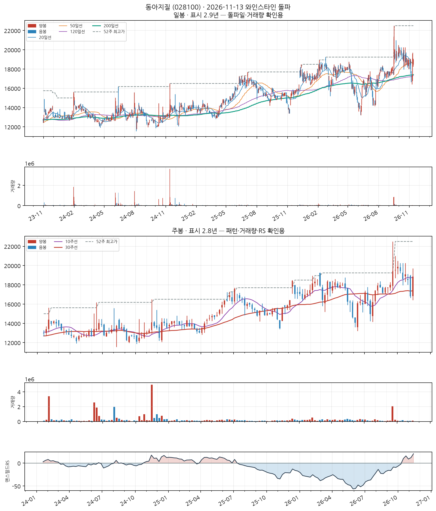
📐 차트 패턴 판정: 후보 없음 후보 없음 판정 기준(PDF)
세 패턴 모두 필수 조건을 채운 후보가 없다(가장 가까운 컵위드핸들 후보: 구조 독립성: 부모 컵(오른쪽 림 2026-10-02)의 핸들 하락(저점 2026-11-06)을 새 컵의 왼쪽 절반으로 재분할한 후보 — 자체 핸들이 아직 없다, 독립된 새 구조의 증거가 없다).
가장 강한 반증 컵위드핸들: 구조 독립성: 부모 컵(오른쪽 림 2026-10-02)의 핸들 하락(저점 2026-11-06)을 새 컵의 왼쪽 절반으로 재분할한 후보 — 자체 핸들이 아직 없다, 독립된 새 구조의 증거가 없다; 이중바닥: 최근성: 돌파가 15주 전(2026-07-31) — 기준 8주 이내, 이미 지난 베이스(확인선 대비 +9.6%)
경쟁 후보·더 단순한 설명 더 단순한 설명: 최근 26주 상승 추세 지속(+16.0%) — 베이스 없음
추가로 필요한 데이터 장중 고저 기준 깊이(여기 수치는 주봉 종가 기준)
패턴만으로 매수 추천이나 목표 달성 확률을 만들지 않습니다. 수치 기준은 잠정치이며 라벨 데이터로 검증되지 않았습니다.
측정, 시험, 항해, 제어 및 기타 정밀기기 제조업; 광학기기 제외
업종 참고: RS 평균 70/99(업종 중 상위 13%) · 오늘 신호 1건 · 업종 평균이 코스닥 대비 +30.7%p(126일), 종목별 편차 ±27%p
🧪 자체 섹터 분류(실험적, 참고용): 특수 목적용 기계 제조업 (케이씨·SFA반도체 등 11종목)
섹터 내 RS 순위: 1/11위 (RS 94/99)
섹터 1~3위: 케이씨(94), SFA반도체(92), 케이씨텍(92)
※ 자체 상관관계 계산(최근 1년) — 검증 시 기준업종 11개 중 8개 정확. 주 단위로 구성종목이 일부 바뀔 수 있음(주간 일치도 실측 0.53)
종가 41,700 · 거래대금 15억
거래량비 2.1x맨스필드RS +41.8
손절 38,781 | 목표 50,457 | 수량 239주
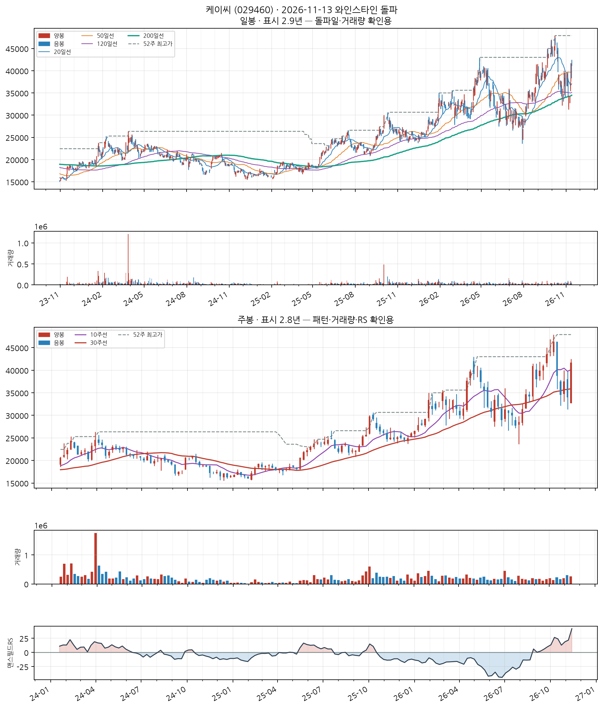
📐 차트 패턴: 약한 유사 — 역헤드앤숄더 형태 완성·미돌파 확신 낮음 판정 기준(PDF)
세 저점 구조는 있으나 넥라인(47,735)을 아직 넘지 못했다.
가장 강한 반증 선행 추세: 선행 추세가 상승(+0.8%) — 상승 중 눌림일 수 있어 반전형 전제가 없다
경쟁 후보·더 단순한 설명 더 단순한 설명: 선행 하락이 없어 반전형이 아니라 상승 추세 중 눌림(조정)일 수 있다
측정표 (주봉 종가 기준, 판정일 2026-11-13 이후 데이터 미사용)
조건별 판정
- 미충족 선행 추세 — 선행 추세가 상승(+0.8%) — 상승 중 눌림일 수 있어 반전형 전제가 없다
- 충족 머리 깊이 — 양 어깨 대비 최소 7.7% ≥ 3.5%
- 충족 어깨 대칭 — 어깨 높이차 11.8% ≤ 15%
- 충족 기간 — 어깨 간 31주 ≥ 6주
- 충족 시간 대칭 — 머리 좌우 기간 비 0.94
- 충족 넥라인 기울기 — 주당 +0.7%
- 부분충족 오른쪽 어깨 매도 약화 — 오른쪽 어깨 부근 거래량 = 머리 부근의 1.41배
- 충족 최근성 — 마지막 구조 피벗(2026-11-06)이 1주 전
- 미충족 넥라인 돌파 — 종가가 아직 확인선 위로 안 올라옴(-12.6%)
- 판정불가 돌파 거래량 — 돌파 전
추가로 필요한 데이터 장중 고저 기준 깊이(여기 수치는 주봉 종가 기준)
패턴만으로 매수 추천이나 목표 달성 확률을 만들지 않습니다. 수치 기준은 잠정치이며 라벨 데이터로 검증되지 않았습니다.
정보없음
🧪 자체 섹터 분류(실험적, 참고용): SK우·SK 등 11종목 (업종 혼재)
섹터 내 RS 순위: 1/11위 (RS 84/99)
섹터 1~3위: SK우(84), SK(78), 삼성전자우(77)
※ 자체 상관관계 계산(최근 1년) — 검증 시 기준업종 11개 중 8개 정확. 주 단위로 구성종목이 일부 바뀔 수 있음(주간 일치도 실측 0.53)
종가 380,500 · 거래대금 9.1억
거래량비 2.5x맨스필드RS +42.6
손절 353,865 | 목표 460,405 | 수량 26주
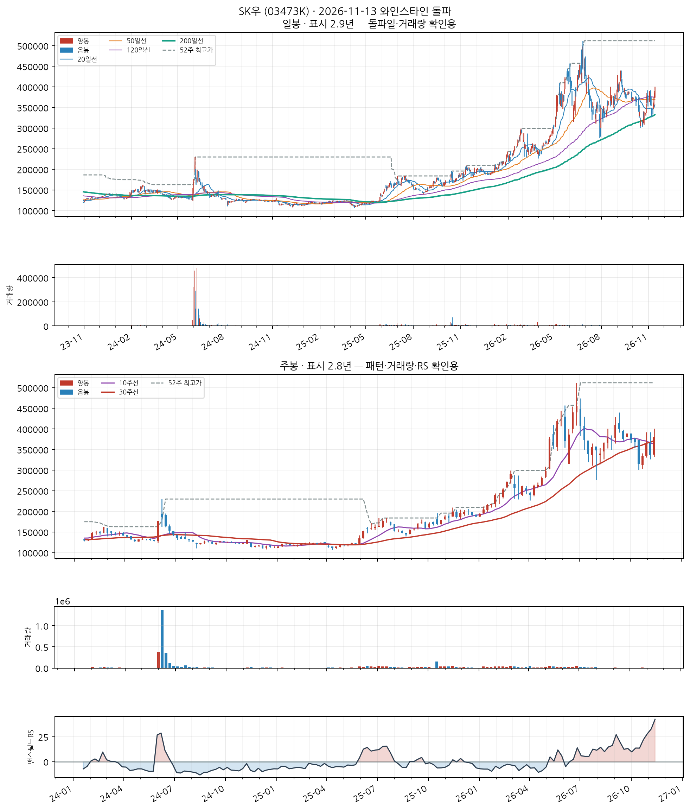
📐 차트 패턴: 약한 유사 — 이중바닥 형태 완성·미돌파 확신 낮음 판정 기준(PDF)
W 형태는 있으나 중간 고점 409,500를 아직 넘지 못했다.
가장 강한 반증 선행 추세: 선행 추세가 상승(+143.1%) — 상승 중 눌림일 수 있어 반전형 전제가 없다
경쟁 후보·더 단순한 설명 더 단순한 설명: 선행 하락이 없어 반전형이 아니라 상승 추세 중 눌림(조정)일 수 있다
측정표 (주봉 종가 기준, 판정일 2026-11-13 이후 데이터 미사용)
조건별 판정
- 미충족 선행 추세 — 선행 추세가 상승(+143.1%) — 상승 중 눌림일 수 있어 반전형 전제가 없다
- 부분충족 두 저점 일치 — 저점 차이 7.1% — 6% 초과
- 충족 중간 반등 — 중간 반등 29.8% ≥ 8%
- 충족 기간 — 베이스 20주 ≥ 7주
- 충족 깊이 — 베이스 깊이 30.7% ≤ 40%
- 충족 저점2 매도 약화 — 저점2 부근 거래량 = 저점1 부근의 0.37배
- 충족 최근성 — 마지막 구조 피벗(2026-10-16)이 4주 전
- 미충족 넥라인 돌파 — 종가가 아직 확인선 위로 안 올라옴(-7.1%)
- 판정불가 돌파 거래량 — 돌파 전
추가로 필요한 데이터 장중 고저 기준 깊이(여기 수치는 주봉 종가 기준)
패턴만으로 매수 추천이나 목표 달성 확률을 만들지 않습니다. 수치 기준은 잠정치이며 라벨 데이터로 검증되지 않았습니다.
SFA반도체 (036540)
신규
KOSDAQ
반도체 제조업
업종 참고: RS 평균 35/99(업종 중 상위 83%) · 오늘 신호 1건 · 업종 평균이 코스닥 대비 +2.6%p(126일), 종목별 편차 ±24%p
🧪 자체 섹터 분류(실험적, 참고용): 특수 목적용 기계 제조업 (케이씨·SFA반도체 등 11종목)
섹터 내 RS 순위: 2/11위 (RS 92/99)
섹터 1~3위: 케이씨(94), SFA반도체(92), 케이씨텍(92)
※ 자체 상관관계 계산(최근 1년) — 검증 시 기준업종 11개 중 8개 정확. 주 단위로 구성종목이 일부 바뀔 수 있음(주간 일치도 실측 0.53)
종가 9,220 · 거래대금 697억
거래량비 2.4x맨스필드RS +80.1
손절 8,575 | 목표 11,156 | 수량 1,084주
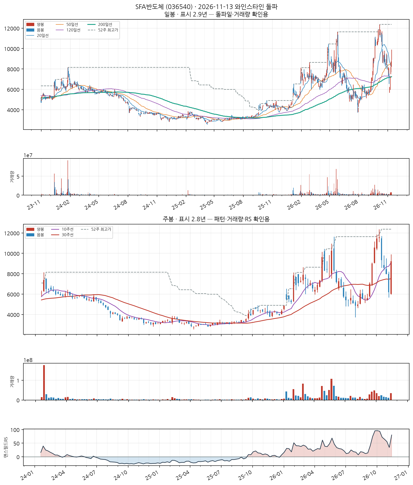
📐 차트 패턴: 약한 유사 — 역헤드앤숄더 형태 완성·미돌파 확신 낮음 판정 기준(PDF)
세 저점 구조는 있으나 넥라인(11,912)을 아직 넘지 못했다.
가장 강한 반증 선행 추세: 선행 추세가 상승(+44.8%) — 상승 중 눌림일 수 있어 반전형 전제가 없다
경쟁 후보·더 단순한 설명 더 단순한 설명: 선행 하락이 없어 반전형이 아니라 상승 추세 중 눌림(조정)일 수 있다
측정표 (주봉 종가 기준, 판정일 2026-11-13 이후 데이터 미사용)
조건별 판정
- 미충족 선행 추세 — 선행 추세가 상승(+44.8%) — 상승 중 눌림일 수 있어 반전형 전제가 없다
- 충족 머리 깊이 — 양 어깨 대비 최소 21.3% ≥ 3.5%
- 충족 어깨 대칭 — 어깨 높이차 3.6% ≤ 15%
- 충족 기간 — 어깨 간 31주 ≥ 6주
- 충족 시간 대칭 — 머리 좌우 기간 비 0.82
- 충족 넥라인 기울기 — 주당 +0.6%
- 부분충족 오른쪽 어깨 매도 약화 — 오른쪽 어깨 부근 거래량 = 머리 부근의 2.01배
- 충족 최근성 — 마지막 구조 피벗(2026-11-06)이 1주 전
- 미충족 넥라인 돌파 — 종가가 아직 확인선 위로 안 올라옴(-22.6%)
- 판정불가 돌파 거래량 — 돌파 전
추가로 필요한 데이터 장중 고저 기준 깊이(여기 수치는 주봉 종가 기준)
패턴만으로 매수 추천이나 목표 달성 확률을 만들지 않습니다. 수치 기준은 잠정치이며 라벨 데이터로 검증되지 않았습니다.
회사 본부 및 경영 컨설팅 서비스업
업종 참고: RS 평균 63/99(업종 중 상위 26%) · 오늘 신호 1건 · 업종 평균이 코스피 대비 +20.9%p(126일), 종목별 편차 ±28%p
🧪 자체 섹터 분류(실험적, 참고용): 인텍플러스·유니퀘스트 등 30종목 (업종 혼재)
섹터 내 RS 순위: 4/30위 (RS 97/99)
섹터 1~3위: 인텍플러스(99), 유니퀘스트(98), 타이거일렉(98)
※ 자체 상관관계 계산(최근 1년) — 검증 시 기준업종 11개 중 8개 정확. 주 단위로 구성종목이 일부 바뀔 수 있음(주간 일치도 실측 0.53)
종가 5,990 · 거래대금 243억
거래량비 20.0x맨스필드RS +121.5
손절 5,571 | 목표 7,248 | 수량 1,669주
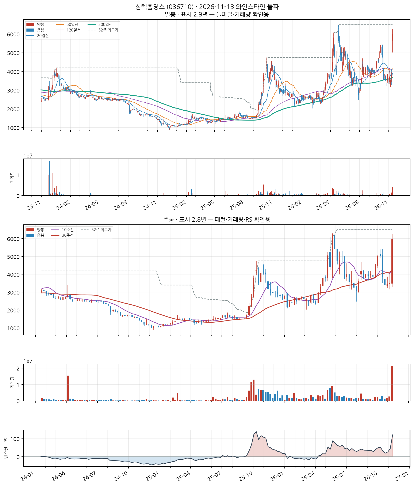
📐 차트 패턴: 약한 유사 — 이중바닥 돌파 확인 확신 낮음 판정 기준(PDF)
두 저점(3,060/3,385) 뒤 중간 고점 5,020를 종가로 넘었다.
가장 강한 반증 선행 추세: 선행 추세가 상승(+106.4%) — 상승 중 눌림일 수 있어 반전형 전제가 없다
경쟁 후보·더 단순한 설명 역헤드앤숄더(돌파 확인·확신 낮음) / 더 단순한 설명: 선행 하락이 없어 반전형이 아니라 상승 추세 중 눌림(조정)일 수 있다
측정표 (주봉 종가 기준, 판정일 2026-11-13 이후 데이터 미사용)
조건별 판정
- 미충족 선행 추세 — 선행 추세가 상승(+106.4%) — 상승 중 눌림일 수 있어 반전형 전제가 없다
- 부분충족 두 저점 일치 — 저점 차이 9.6% — 6% 초과
- 부분충족 중간 반등 — 중간 반등 64.1% — 30%를 넘어 W가 아니라 독립된 두 파동일 수 있음
- 충족 기간 — 베이스 25주 ≥ 7주
- 미충족 깊이 — 베이스 깊이 50.2% — 50% 초과
- 부분충족 저점2 매도 약화 — 저점2 부근 거래량 = 저점1 부근의 1.31배
- 충족 최근성 — 돌파 주(2026-11-13)가 0주 전
- 충족 넥라인 돌파 — 2026-11-13 주 종가 5,990 > 확인선
- 충족 돌파 거래량 — 돌파 주 거래량 = 직전 10주 평균의 12.60배
추가로 필요한 데이터 장중 고저 기준 깊이(여기 수치는 주봉 종가 기준)
패턴만으로 매수 추천이나 목표 달성 확률을 만들지 않습니다. 수치 기준은 잠정치이며 라벨 데이터로 검증되지 않았습니다.
한국정보인증 (053300)
신규
KOSDAQ
소프트웨어 개발 및 공급업
업종 참고: RS 평균 53/99(업종 중 상위 52%) · 오늘 신호 3건 · 업종 평균이 코스닥 대비 +24.1%p(126일), 종목별 편차 ±43%p
🧪 자체 섹터 분류(실험적, 참고용): 소프트웨어 개발 및 공급업 (금호건설·지니언스 등 28종목)
섹터 내 RS 순위: 6/28위 (RS 86/99)
섹터 1~3위: 금호건설(99), 지니언스(99), 안랩(98)
※ 자체 상관관계 계산(최근 1년) — 검증 시 기준업종 11개 중 8개 정확. 주 단위로 구성종목이 일부 바뀔 수 있음(주간 일치도 실측 0.53)
종가 5,550 · 거래대금 13억
거래량비 2.1x맨스필드RS +34.5
손절 5,162 | 목표 6,716 | 수량 1,801주
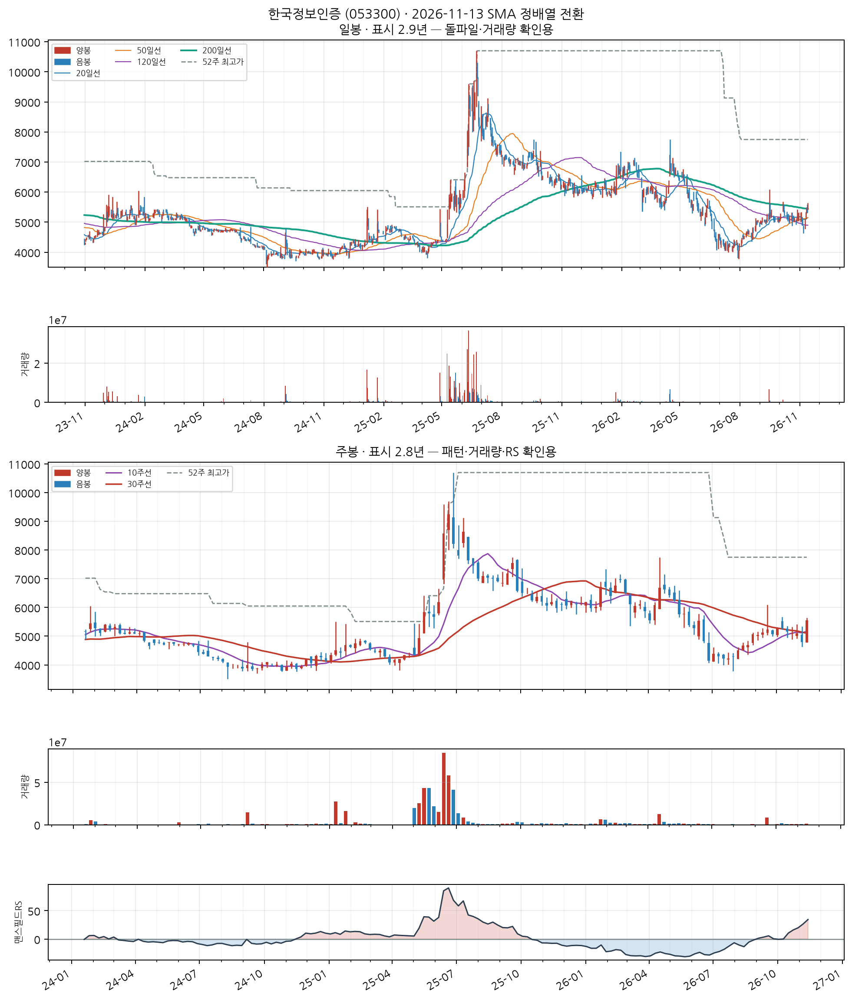
📐 차트 패턴: 약한 유사 — 컵위드핸들 형성 중 확신 낮음 판정 기준(PDF)
컵 구조(30주·깊이 38.0%)는 있으나 핸들이 아직 없다 — 형성 중.
가장 강한 반증 선행 추세: 선행 상승 +7.0% — +20%에 못 미침
경쟁 후보·더 단순한 설명 더 단순한 설명: 깊이 조건이 약해 단순 횡보·박스로 볼 여지가 있다(컵 깊이 38.0% — 기준 12%~33% 밖(고변동 종목이라 50%까지 예외 허용))
측정표 (주봉 종가 기준, 판정일 2026-11-13 이후 데이터 미사용)
조건별 판정
- 부분충족 선행 추세 — 선행 상승 +7.0% — +20%에 못 미침
- 충족 기간 — 컵 30주 (기준 7~65주)
- 부분충족 깊이 — 컵 깊이 38.0% — 기준 12%~33% 밖(고변동 종목이라 50%까지 예외 허용)
- 부분충족 림 대칭 — 좌우 림 차이 17.0% — 12% 초과
- 부분충족 U자 모양 — 바닥 형태(3주 중앙값 평활): 직선 V 템플릿 오차 0.153 vs 포물선 U 템플릿 오차 0.161 → 치우침 -0.008 (V=−0.167·U=+0.167, 기각 ≤-0.05·충족 ≥+0.05) · 바닥 중심 위치 42% — V와 U 사이 — 둥근 바닥의 증거가 약함
- 충족 베이스 거래량 수축 — 컵 구간 평균 = 직전 30주 평균의 0.93배
- 판정불가 핸들 — 오른쪽 림 이후 봉이 없어 핸들 미형성
- 충족 최근성 — 마지막 구조 피벗(2026-11-13)이 0주 전
- 미충족 피벗 돌파 — 종가가 아직 확인선 위로 안 올라옴(+0.0%)
- 판정불가 돌파 거래량 — 돌파 전
추가로 필요한 데이터 장중 고저 기준 깊이(여기 수치는 주봉 종가 기준)
패턴만으로 매수 추천이나 목표 달성 확률을 만들지 않습니다. 수치 기준은 잠정치이며 라벨 데이터로 검증되지 않았습니다.
특수 목적용 기계 제조업
업종 참고: RS 평균 46/99(업종 중 상위 68%) · 오늘 신호 3건 · 업종 평균이 코스닥 대비 +16.2%p(126일), 종목별 편차 ±43%p
🧪 자체 섹터 분류(실험적, 참고용): 인텍플러스·유니퀘스트 등 30종목 (업종 혼재)
섹터 내 RS 순위: 1/30위 (RS 99/99)
섹터 1~3위: 인텍플러스(99), 유니퀘스트(98), 타이거일렉(98)
※ 자체 상관관계 계산(최근 1년) — 검증 시 기준업종 11개 중 8개 정확. 주 단위로 구성종목이 일부 바뀔 수 있음(주간 일치도 실측 0.53)
종가 55,200 · 거래대금 589억
거래량비 2.4x맨스필드RS +126.8
손절 51,336 | 목표 66,792 | 수량 181주
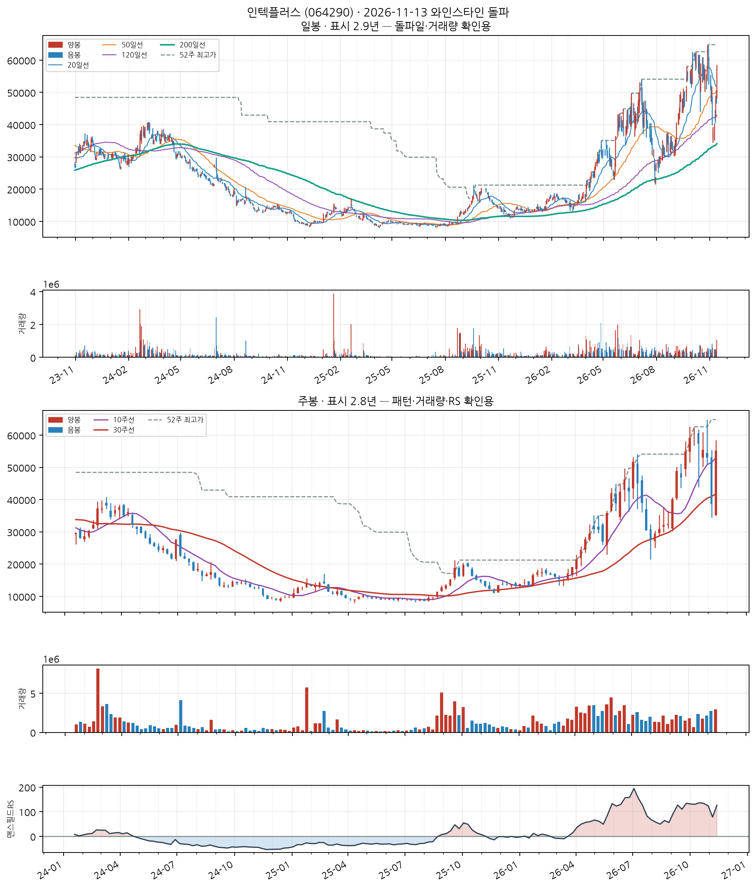
📐 차트 패턴 판정: 후보 없음 후보 없음 판정 기준(PDF)
세 패턴 모두 필수 조건을 채운 후보가 없다(가장 가까운 컵위드핸들 후보: 구조 독립성: 부모 컵(오른쪽 림 2026-10-08)의 핸들 하락(저점 2026-11-06)을 새 컵의 왼쪽 절반으로 재분할한 후보 — 자체 핸들이 아직 없다, 독립된 새 구조의 증거가 없다).
가장 강한 반증 컵위드핸들: 구조 독립성: 부모 컵(오른쪽 림 2026-10-08)의 핸들 하락(저점 2026-11-06)을 새 컵의 왼쪽 절반으로 재분할한 후보 — 자체 핸들이 아직 없다, 독립된 새 구조의 증거가 없다; 이중바닥: 두 저점 일치: 저점 차이 28.4% — 같은 지지대로 보기 어려움(10% 초과)
경쟁 후보·더 단순한 설명 더 단순한 설명: 최근 26주 상승 추세 지속(+104.8%) — 베이스 없음
추가로 필요한 데이터 장중 고저 기준 깊이(여기 수치는 주봉 종가 기준)
패턴만으로 매수 추천이나 목표 달성 확률을 만들지 않습니다. 수치 기준은 잠정치이며 라벨 데이터로 검증되지 않았습니다.
일반 목적용 기계 제조업
업종 참고: RS 평균 39/99(업종 중 상위 78%) · 오늘 신호 1건 · 업종 평균이 코스닥 대비 +11.5%p(126일), 종목별 편차 ±49%p
🧪 자체 섹터 분류(실험적, 참고용): 아스플로·DB 등 29종목 (업종 혼재)
섹터 내 RS 순위: 4/29위 (RS 90/99)
섹터 1~3위: 아스플로(99), DB(93), 동국산업(90)
※ 자체 상관관계 계산(최근 1년) — 검증 시 기준업종 11개 중 8개 정확. 주 단위로 구성종목이 일부 바뀔 수 있음(주간 일치도 실측 0.53)
종가 16,990 · 거래대금 15억
거래량비 3.4x맨스필드RS +49.0
손절 15,801 | 목표 20,558 | 수량 588주
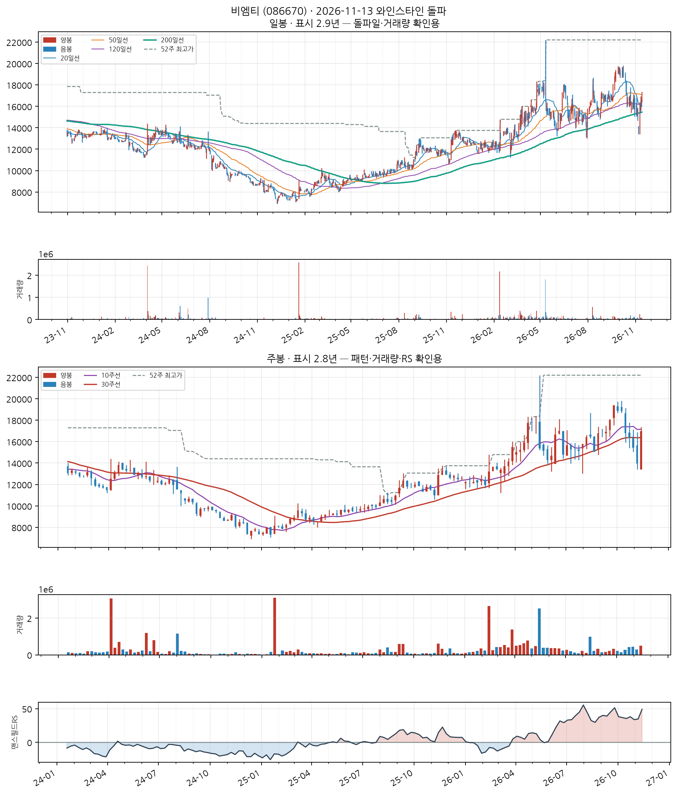
📐 차트 패턴: 약한 유사 — 이중바닥 형태 완성·미돌파 확신 낮음 판정 기준(PDF)
W 형태는 있으나 중간 고점 19,390를 아직 넘지 못했다.
가장 강한 반증 선행 추세: 선행 추세가 상승(+62.4%) — 상승 중 눌림일 수 있어 반전형 전제가 없다
경쟁 후보·더 단순한 설명 컵위드핸들(형성 중·확신 낮음) / 역헤드앤숄더(실패·확신 낮음) / 더 단순한 설명: 선행 하락이 없어 반전형이 아니라 상승 추세 중 눌림(조정)일 수 있다
측정표 (주봉 종가 기준, 판정일 2026-11-13 이후 데이터 미사용)
조건별 판정
- 미충족 선행 추세 — 선행 추세가 상승(+62.4%) — 상승 중 눌림일 수 있어 반전형 전제가 없다
- 충족 두 저점 일치 — 저점 차이 2.2% ≤ 6% · 두 번째 저점이 첫 저점을 언더컷(IBD 선호)
- 부분충족 중간 반등 — 중간 반등 38.9% — 30%를 넘어 W가 아니라 독립된 두 파동일 수 있음
- 충족 기간 — 베이스 27주 ≥ 7주
- 충족 깊이 — 베이스 깊이 21.8% ≤ 40%
- 부분충족 저점2 매도 약화 — 저점2 부근 거래량 = 저점1 부근의 1.07배
- 충족 최근성 — 마지막 구조 피벗(2026-11-06)이 1주 전
- 미충족 넥라인 돌파 — 종가가 아직 확인선 위로 안 올라옴(-12.4%)
- 판정불가 돌파 거래량 — 돌파 전
추가로 필요한 데이터 장중 고저 기준 깊이(여기 수치는 주봉 종가 기준)
패턴만으로 매수 추천이나 목표 달성 확률을 만들지 않습니다. 수치 기준은 잠정치이며 라벨 데이터로 검증되지 않았습니다.
기계장비 및 관련 물품 도매업
업종 참고: RS 평균 52/99(업종 중 상위 55%) · 오늘 신호 1건 · 업종 평균이 코스닥 대비 +28.0%p(126일), 종목별 편차 ±51%p
🧪 자체 섹터 분류(실험적, 참고용): 매커스·페니트리움바이오 등 8종목 (업종 혼재)
섹터 내 RS 순위: 1/8위 (RS 89/99)
섹터 1~3위: 매커스(89), 페니트리움바이오(60), 나노엔텍(56)
※ 자체 상관관계 계산(최근 1년) — 검증 시 기준업종 11개 중 8개 정확. 주 단위로 구성종목이 일부 바뀔 수 있음(주간 일치도 실측 0.53)
종가 26,100 · 거래대금 30억
거래량비 4.1x맨스필드RS +46.6
손절 24,273 | 목표 31,581 | 수량 383주
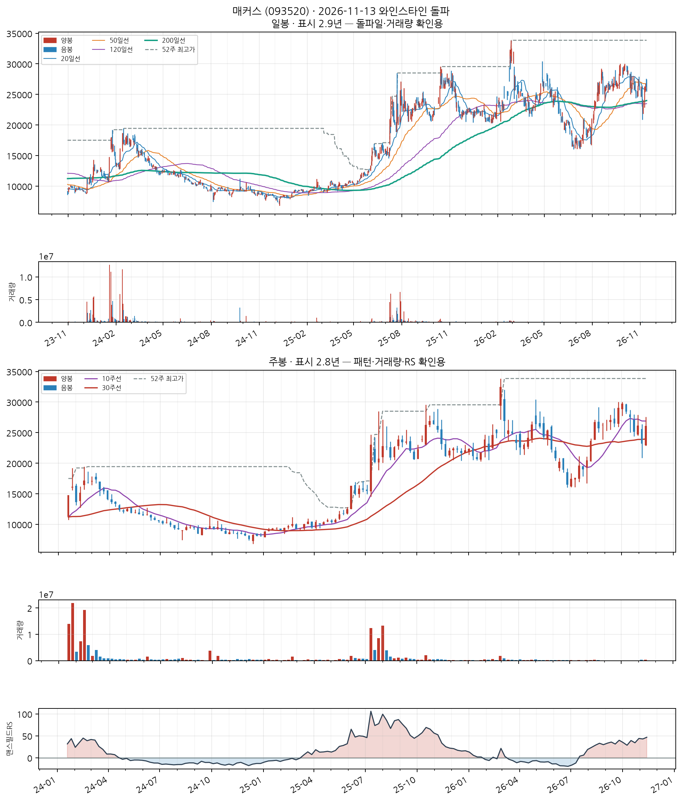
📐 차트 패턴: 약한 유사 — 컵위드핸들 형태 완성·미돌파 확신 낮음 판정 기준(PDF)
컵(22주·깊이 44.7%)+핸들 형태는 있으나 피벗 29,750를 아직 넘지 못했다.
가장 강한 반증 선행 추세: 선행 추세가 하락(+0.0%) — 지속형 컵의 전제가 없다(라운딩 바텀 가능)
경쟁 후보·더 단순한 설명 더 단순한 설명: 선행 상승이 없어 컵이 아니라 하락 뒤 라운딩 바텀일 수 있다
측정표 (주봉 종가 기준, 판정일 2026-11-13 이후 데이터 미사용)
조건별 판정
- 미충족 선행 추세 — 선행 추세가 하락(+0.0%) — 지속형 컵의 전제가 없다(라운딩 바텀 가능)
- 충족 기간 — 컵 22주 (기준 7~65주)
- 부분충족 깊이 — 컵 깊이 44.7% — 기준 12%~33% 밖(고변동 종목이라 50%까지 예외 허용)
- 충족 림 대칭 — 좌우 림 차이 11.3% ≤ 12%
- 부분충족 U자 모양 — 바닥 형태(3주 중앙값 평활): 직선 V 템플릿 오차 0.100 vs 포물선 U 템플릿 오차 0.147 → 치우침 -0.047 (V=−0.167·U=+0.167, 기각 ≤-0.05·충족 ≥+0.05) · 바닥 중심 위치 41% — V와 U 사이 — 둥근 바닥의 증거가 약함
- 충족 베이스 거래량 수축 — 컵 구간 평균 = 직전 22주 평균의 0.48배
- 부분충족 핸들 — 핸들 5주·깊이 22.0% — 15% 또는 컵 깊이 절반(22.3%) 초과
- 충족 핸들 거래량 수축 — 핸들 평균 = 컵 구간 평균의 0.67배
- 충족 최근성 — 마지막 구조 피벗(2026-11-06)이 1주 전
- 미충족 피벗 돌파 — 종가가 아직 확인선 위로 안 올라옴(-12.3%)
- 판정불가 돌파 거래량 — 돌파 전
추가로 필요한 데이터 장중 고저 기준 깊이(여기 수치는 주봉 종가 기준)
패턴만으로 매수 추천이나 목표 달성 확률을 만들지 않습니다. 수치 기준은 잠정치이며 라벨 데이터로 검증되지 않았습니다.
그외 기타 전문, 과학 및 기술 서비스업
업종 참고: RS 평균 50/99(업종 중 상위 61%) · 오늘 신호 1건 · 업종 평균이 코스닥 대비 +15.2%p(126일), 종목별 편차 ±32%p
🧪 자체 섹터 분류(실험적, 참고용): 바이오비쥬·지어소프트 등 13종목 (업종 혼재)
섹터 내 RS 순위: 6/13위 (RS 89/99)
섹터 1~3위: 바이오비쥬(99), 지어소프트(98), 가비아(97)
※ 자체 상관관계 계산(최근 1년) — 검증 시 기준업종 11개 중 8개 정확. 주 단위로 구성종목이 일부 바뀔 수 있음(주간 일치도 실측 0.53)
종가 7,230 · 거래대금 25억
거래량비 3.8x맨스필드RS +48.3
손절 6,724 | 목표 8,748 | 수량 1,383주
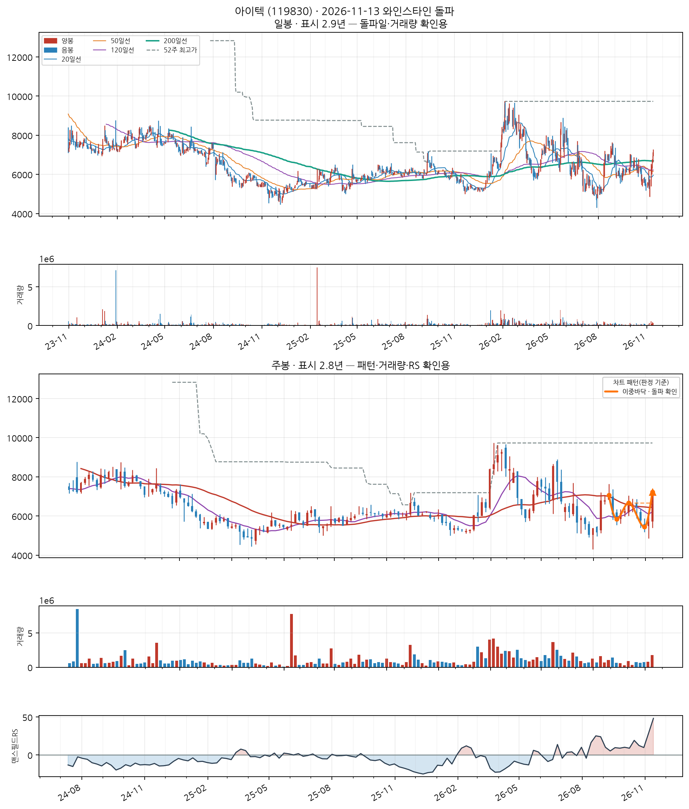
📐 이중바닥 · 돌파 확인
📐 차트 패턴 판정: 이중바닥 돌파 확인 확신 중간 판정 기준(PDF)
두 저점(5,850/5,440) 뒤 중간 고점 6,670를 종가로 넘었다.
가장 강한 반증 두 저점 일치: 저점 차이 7.0% — 6% 초과
경쟁 후보·더 단순한 설명 역헤드앤숄더(돌파 확인·확신 낮음)
측정표 (주봉 종가 기준, 판정일 2026-11-13 이후 데이터 미사용)
조건별 판정
- 충족 선행 추세 — 선행 하락 -16.3% ≤ -15%
- 부분충족 두 저점 일치 — 저점 차이 7.0% — 6% 초과
- 충족 중간 반등 — 중간 반등 22.6% ≥ 8%
- 충족 기간 — 베이스 11주 ≥ 7주
- 충족 깊이 — 베이스 깊이 22.9% ≤ 40%
- 충족 저점2 매도 약화 — 저점2 부근 거래량 = 저점1 부근의 0.84배
- 충족 최근성 — 돌파 주(2026-11-13)가 0주 전
- 충족 넥라인 돌파 — 2026-11-13 주 종가 7,230 > 확인선
- 충족 돌파 거래량 — 돌파 주 거래량 = 직전 10주 평균의 2.52배
추가로 필요한 데이터 장중 고저 기준 깊이(여기 수치는 주봉 종가 기준)
패턴만으로 매수 추천이나 목표 달성 확률을 만들지 않습니다. 수치 기준은 잠정치이며 라벨 데이터로 검증되지 않았습니다.
에스디바이오센서 (137310)
신규
KOSPI
의료용 기기 제조업
업종 참고: RS 평균 37/99(업종 중 상위 81%) · 오늘 신호 2건 · 업종 평균이 코스닥 대비 +1.9%p(126일), 종목별 편차 ±18%p
🧪 자체 섹터 분류(실험적, 참고용): 셀트리온·삼성바이오로직스 등 13종목 (업종 혼재)
섹터 내 RS 순위: 9/13위 (RS 69/99)
섹터 1~3위: 셀트리온(94), 삼성바이오로직스(86), 녹십자(85)
※ 자체 상관관계 계산(최근 1년) — 검증 시 기준업종 11개 중 8개 정확. 주 단위로 구성종목이 일부 바뀔 수 있음(주간 일치도 실측 0.53)
종가 7,240 · 거래대금 8.3억
거래량비 3.4x맨스필드RS +3.3
손절 6,733 | 목표 8,760 | 수량 1,381주
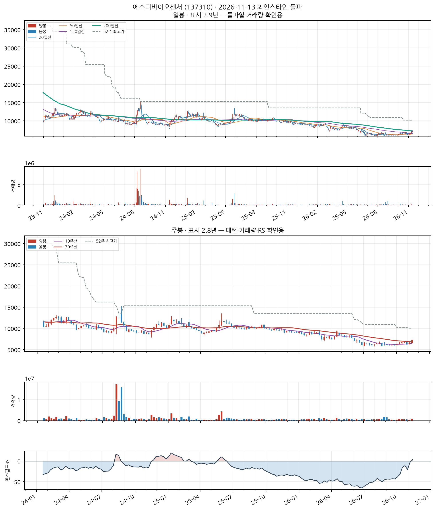
📐 차트 패턴 판정: 후보 없음 후보 없음 판정 기준(PDF)
세 패턴 모두 필수 조건을 채운 후보가 없다(가장 가까운 컵위드핸들 후보: 림 대칭: 좌우 림 차이 22.2% — 오른쪽 림이 낮음, 20% 초과).
가장 강한 반증 컵위드핸들: 림 대칭: 좌우 림 차이 22.2% — 오른쪽 림이 낮음, 20% 초과; 이중바닥: 두 저점 일치: 저점 차이 20.7% — 같은 지지대로 보기 어려움(10% 초과)
경쟁 후보·더 단순한 설명 더 단순한 설명: 최근 26주 하락 추세 지속(-9.4%) — 베이스 없음
추가로 필요한 데이터 장중 고저 기준 깊이(여기 수치는 주봉 종가 기준)
패턴만으로 매수 추천이나 목표 달성 확률을 만들지 않습니다. 수치 기준은 잠정치이며 라벨 데이터로 검증되지 않았습니다.
페니트리움바이오 (187660)
신규
KOSDAQ
자연과학 및 공학 연구개발업
업종 참고: RS 평균 27/99(업종 중 상위 90%) · 오늘 신호 1건 · 업종 평균이 코스닥 대비 -5.3%p(126일), 종목별 편차 ±23%p
🧪 자체 섹터 분류(실험적, 참고용): 매커스·페니트리움바이오 등 8종목 (업종 혼재)
섹터 내 RS 순위: 2/8위 (RS 60/99)
섹터 1~3위: 매커스(89), 페니트리움바이오(60), 나노엔텍(56)
※ 자체 상관관계 계산(최근 1년) — 검증 시 기준업종 11개 중 8개 정확. 주 단위로 구성종목이 일부 바뀔 수 있음(주간 일치도 실측 0.53)
종가 6,400 · 거래대금 93억
거래량비 2.3x맨스필드RS +33.7
손절 5,952 | 목표 7,744 | 수량 1,562주
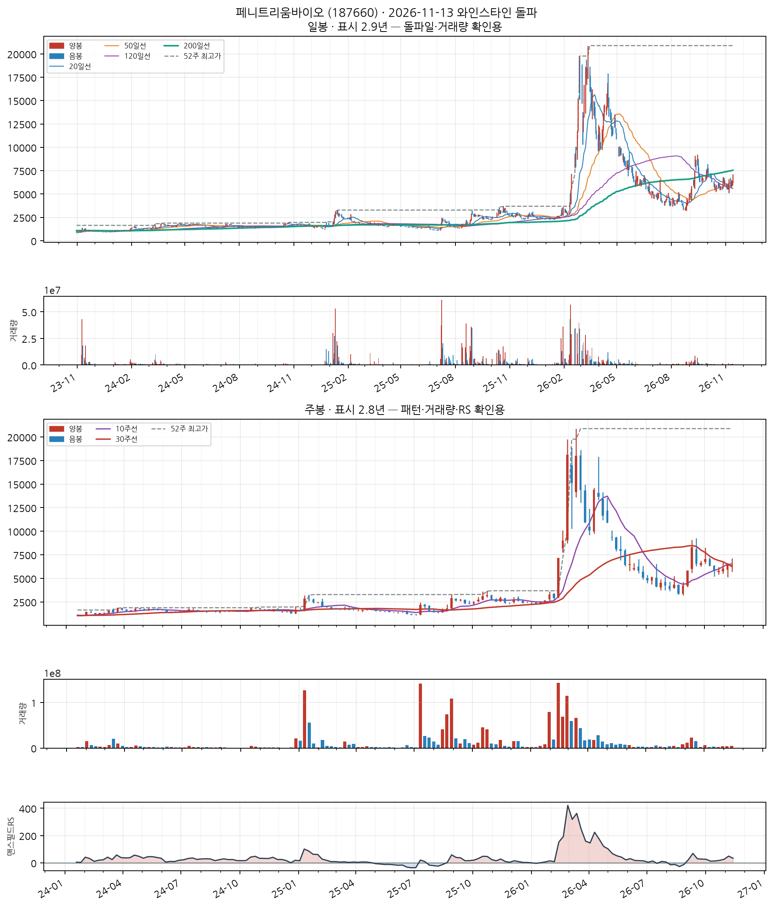
📐 차트 패턴 판정: 후보 없음 후보 없음 판정 기준(PDF)
세 패턴 모두 필수 조건을 채운 후보가 없다(가장 가까운 역헤드앤숄더 후보: 어깨 대칭: 어깨 높이차 36.5% — 과도(25% 초과)).
가장 강한 반증 역헤드앤숄더: 어깨 대칭: 어깨 높이차 36.5% — 과도(25% 초과); 이중바닥: 두 저점 일치: 저점 차이 47.7% — 같은 지지대로 보기 어려움(10% 초과); 컵위드핸들: 깊이: 컵 깊이 76.7% — 기준 12%~33%(고변동 최대 50%)를 벗어남
경쟁 후보·더 단순한 설명 더 단순한 설명: 최근 26주 하락 추세 지속(-20.8%) — 베이스 없음
추가로 필요한 데이터 장중 고저 기준 깊이(여기 수치는 주봉 종가 기준)
패턴만으로 매수 추천이나 목표 달성 확률을 만들지 않습니다. 수치 기준은 잠정치이며 라벨 데이터로 검증되지 않았습니다.
전자부품 제조업
업종 참고: RS 평균 46/99(업종 중 상위 70%) · 오늘 신호 7건 · 업종 평균이 코스닥 대비 +12.7%p(126일), 종목별 편차 ±32%p
🧪 자체 섹터 분류(실험적, 참고용): 피델릭스·제이앤티씨 등 19종목 (업종 혼재)
섹터 내 RS 순위: 2/19위 (RS 78/99)
섹터 1~3위: 피델릭스(95), 제이앤티씨(78), 명신산업(41)
※ 자체 상관관계 계산(최근 1년) — 검증 시 기준업종 11개 중 8개 정확. 주 단위로 구성종목이 일부 바뀔 수 있음(주간 일치도 실측 0.53)
종가 19,590 · 거래대금 233억
거래량비 5.9x맨스필드RS +35.7
손절 18,219 | 목표 23,704 | 수량 510주
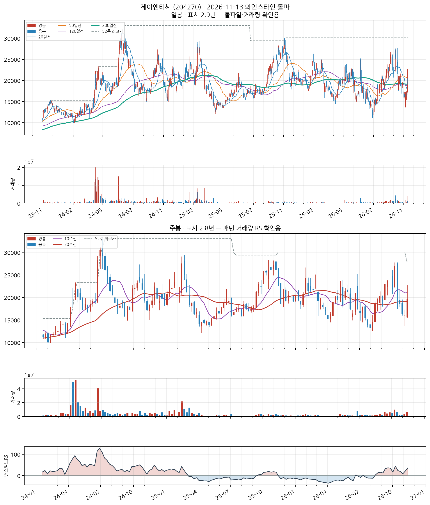
📐 차트 패턴 판정: 후보 없음 후보 없음 판정 기준(PDF)
세 패턴 모두 필수 조건을 채운 후보가 없다(가장 가까운 컵위드핸들 후보: 림 대칭: 좌우 림 차이 27.4% — 오른쪽 림이 낮음, 20% 초과).
가장 강한 반증 컵위드핸들: 림 대칭: 좌우 림 차이 27.4% — 오른쪽 림이 낮음, 20% 초과; 이중바닥: 두 저점 일치: 저점 차이 17.5% — 같은 지지대로 보기 어려움(10% 초과); 역헤드앤숄더: 최근성: 돌파가 21주 전(2026-06-19) — 기준 8주 이내, 이미 지난 베이스(확인선 대비 +16.7%)
경쟁 후보·더 단순한 설명 더 단순한 설명: 최근 26주 상승 추세 지속(+7.0%) — 베이스 없음
추가로 필요한 데이터 장중 고저 기준 깊이(여기 수치는 주봉 종가 기준)
패턴만으로 매수 추천이나 목표 달성 확률을 만들지 않습니다. 수치 기준은 잠정치이며 라벨 데이터로 검증되지 않았습니다.
통신 및 방송 장비 제조업
업종 참고: RS 평균 39/99(업종 중 상위 76%) · 오늘 신호 1건 · 업종 평균이 코스닥 대비 +5.4%p(126일), 종목별 편차 ±20%p
🧪 자체 섹터 분류(실험적, 참고용): 우리로·LIG아큐버 등 22종목 (업종 혼재)
섹터 내 RS 순위: 4/22위 (RS 34/99)
섹터 1~3위: 우리로(58), LIG아큐버(46), 빛과전자(37)
※ 자체 상관관계 계산(최근 1년) — 검증 시 기준업종 11개 중 8개 정확. 주 단위로 구성종목이 일부 바뀔 수 있음(주간 일치도 실측 0.53)
종가 10,330 · 거래대금 531억
거래량비 4.3x맨스필드RS +15.2
손절 9,607 | 목표 12,499 | 수량 968주
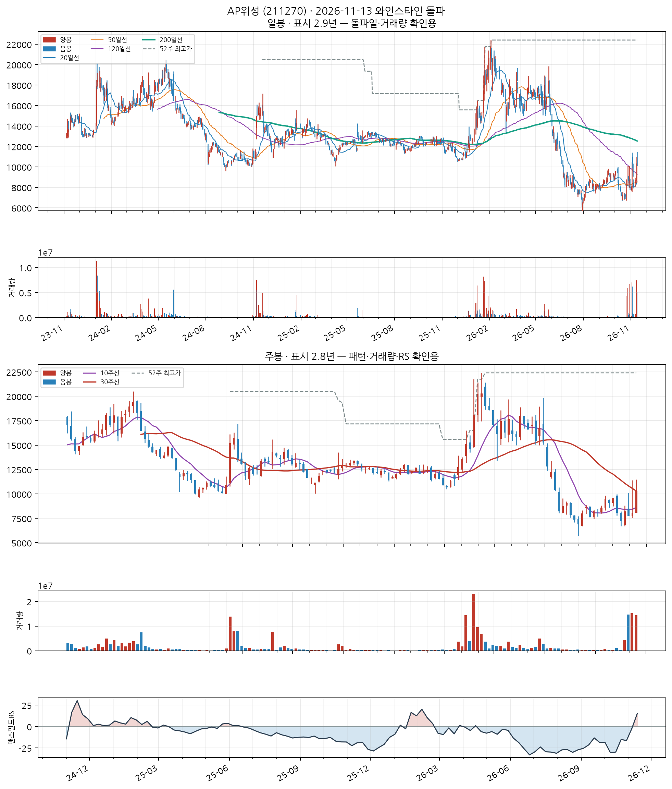
📐 차트 패턴: 약한 유사 — 이중바닥 돌파 확인 확신 낮음 판정 기준(PDF)
두 저점(6,870/7,200) 뒤 중간 고점 9,550를 종가로 넘었다.
가장 강한 반증 선행 추세: 선행 추세가 상승(+49.0%) — 상승 중 눌림일 수 있어 반전형 전제가 없다
경쟁 후보·더 단순한 설명 더 단순한 설명: 선행 하락이 없어 반전형이 아니라 상승 추세 중 눌림(조정)일 수 있다
측정표 (주봉 종가 기준, 판정일 2026-11-13 이후 데이터 미사용)
조건별 판정
- 미충족 선행 추세 — 선행 추세가 상승(+49.0%) — 상승 중 눌림일 수 있어 반전형 전제가 없다
- 충족 두 저점 일치 — 저점 차이 4.6% ≤ 6%
- 부분충족 중간 반등 — 중간 반등 39.0% — 30%를 넘어 W가 아니라 독립된 두 파동일 수 있음
- 충족 기간 — 베이스 30주 ≥ 7주
- 미충족 깊이 — 베이스 깊이 61.8% — 50% 초과
- 부분충족 저점2 매도 약화 — 저점2 부근 거래량 = 저점1 부근의 5.23배
- 충족 최근성 — 돌파 주(2026-11-13)가 0주 전
- 충족 넥라인 돌파 — 2026-11-13 주 종가 10,330 > 확인선
- 충족 돌파 거래량 — 돌파 주 거래량 = 직전 10주 평균의 3.82배
추가로 필요한 데이터 장중 고저 기준 깊이(여기 수치는 주봉 종가 기준)
패턴만으로 매수 추천이나 목표 달성 확률을 만들지 않습니다. 수치 기준은 잠정치이며 라벨 데이터로 검증되지 않았습니다.
전자부품 제조업
업종 참고: RS 평균 46/99(업종 중 상위 70%) · 오늘 신호 7건 · 업종 평균이 코스닥 대비 +12.7%p(126일), 종목별 편차 ±32%p
🧪 자체 섹터 분류(실험적, 참고용): 인텍플러스·유니퀘스트 등 30종목 (업종 혼재)
섹터 내 RS 순위: 6/30위 (RS 96/99)
섹터 1~3위: 인텍플러스(99), 유니퀘스트(98), 타이거일렉(98)
※ 자체 상관관계 계산(최근 1년) — 검증 시 기준업종 11개 중 8개 정확. 주 단위로 구성종목이 일부 바뀔 수 있음(주간 일치도 실측 0.53)
종가 16,930 · 거래대금 219억
거래량비 2.1x맨스필드RS +82.8
손절 15,745 | 목표 20,485 | 수량 590주
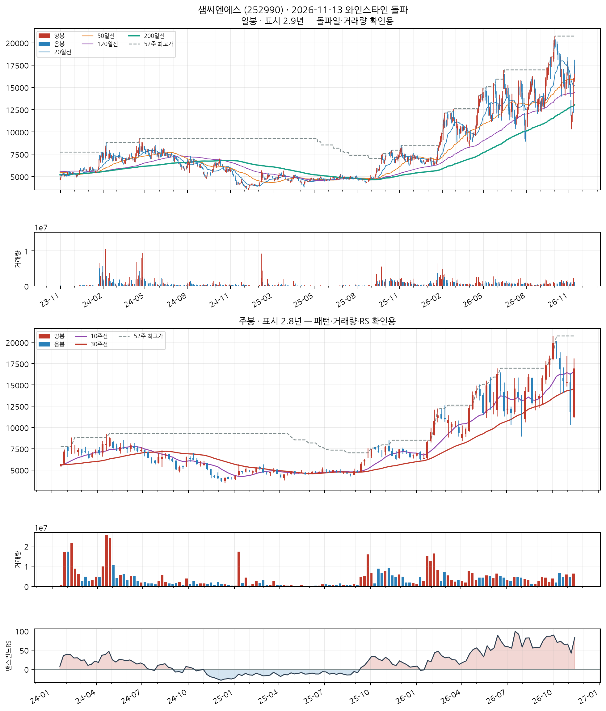
📐 차트 패턴: 약한 유사 — 이중바닥 돌파 확인 확신 낮음 판정 기준(PDF)
두 저점(11,720/10,980) 뒤 중간 고점 16,320를 종가로 넘었다.
가장 강한 반증 선행 추세: 선행 추세가 상승(+84.0%) — 상승 중 눌림일 수 있어 반전형 전제가 없다
경쟁 후보·더 단순한 설명 컵위드핸들(형성 중·확신 낮음) / 역헤드앤숄더(형태 완성·미돌파·확신 낮음) / 더 단순한 설명: 선행 하락이 없어 반전형이 아니라 상승 추세 중 눌림(조정)일 수 있다
측정표 (주봉 종가 기준, 판정일 2026-11-13 이후 데이터 미사용)
조건별 판정
- 미충족 선행 추세 — 선행 추세가 상승(+84.0%) — 상승 중 눌림일 수 있어 반전형 전제가 없다
- 부분충족 두 저점 일치 — 저점 차이 6.3% — 6% 초과
- 부분충족 중간 반등 — 중간 반등 48.6% — 30%를 넘어 W가 아니라 독립된 두 파동일 수 있음
- 충족 기간 — 베이스 28주 ≥ 7주
- 충족 깊이 — 베이스 깊이 23.0% ≤ 40%
- 충족 저점2 매도 약화 — 저점2 부근 거래량 = 저점1 부근의 0.90배
- 충족 최근성 — 돌파 주(2026-09-18)가 8주 전
- 충족 넥라인 돌파 — 2026-09-18 주 종가 17,300 > 확인선 — 돌파 후 8주 경과
- 부분충족 돌파 거래량 — 돌파 주 거래량 = 직전 10주 평균의 1.32배 (기준 1.4배)
추가로 필요한 데이터 장중 고저 기준 깊이(여기 수치는 주봉 종가 기준)
차트 오버레이 탐지기: 🧪 역헤드앤숄더 유사(실험적) — 후보 생성기일 뿐, 위 판정과 독립
패턴만으로 매수 추천이나 목표 달성 확률을 만들지 않습니다. 수치 기준은 잠정치이며 라벨 데이터로 검증되지 않았습니다.
기타 식품 제조업
업종 참고: RS 평균 61/99(업종 중 상위 33%) · 오늘 신호 1건 · 업종 평균이 코스피 대비 +11.9%p(126일), 종목별 편차 ±14%p
🧪 자체 섹터 분류(실험적, 참고용): 기타 식품 제조업 (삼양식품·에스앤디 등 5종목)
섹터 내 RS 순위: 2/5위 (RS 63/99)
섹터 1~3위: 삼양식품(69), 에스앤디(63), 선진(57)
※ 자체 상관관계 계산(최근 1년) — 검증 시 기준업종 11개 중 8개 정확. 주 단위로 구성종목이 일부 바뀔 수 있음(주간 일치도 실측 0.53)
종가 58,800 · 거래대금 10억
거래량비 3.0x맨스필드RS +33.0
손절 54,684 | 목표 71,148 | 수량 170주
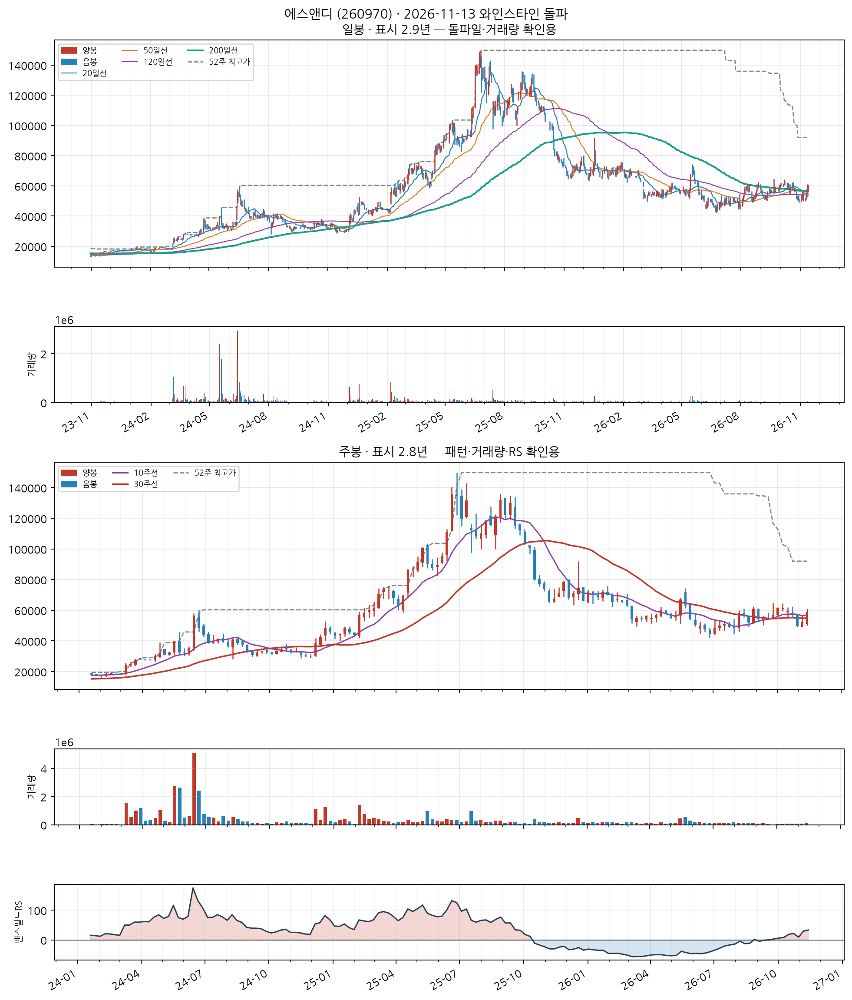
📐 차트 패턴 판정: 후보 없음 후보 없음 판정 기준(PDF)
세 패턴 모두 필수 조건을 채운 후보가 없다(가장 가까운 컵위드핸들 후보: 깊이: 컵 깊이 66.5% — 기준 12%~33%(고변동 최대 50%)를 벗어남).
가장 강한 반증 컵위드핸들: 깊이: 컵 깊이 66.5% — 기준 12%~33%(고변동 최대 50%)를 벗어남; 이중바닥: 두 저점 일치: 저점 차이 59.1% — 같은 지지대로 보기 어려움(10% 초과)
경쟁 후보·더 단순한 설명 더 단순한 설명: 최근 26주 하락 추세 지속(-12.2%) — 베이스 없음
추가로 필요한 데이터 장중 고저 기준 깊이(여기 수치는 주봉 종가 기준)
패턴만으로 매수 추천이나 목표 달성 확률을 만들지 않습니다. 수치 기준은 잠정치이며 라벨 데이터로 검증되지 않았습니다.
전자부품 제조업
업종 참고: RS 평균 46/99(업종 중 상위 70%) · 오늘 신호 7건 · 업종 평균이 코스닥 대비 +12.7%p(126일), 종목별 편차 ±32%p
🧪 자체 섹터 분류(실험적, 참고용): 전자부품 제조업 (디케이티·도우인시스 등 8종목)
섹터 내 RS 순위: 1/8위 (RS 90/99)
섹터 1~3위: 디케이티(90), 도우인시스(59), 파인엠텍(43)
※ 자체 상관관계 계산(최근 1년) — 검증 시 기준업종 11개 중 8개 정확. 주 단위로 구성종목이 일부 바뀔 수 있음(주간 일치도 실측 0.53)
종가 27,850 · 거래대금 248억
거래량비 2.6x맨스필드RS +107.2
손절 25,900 | 목표 33,698 | 수량 359주
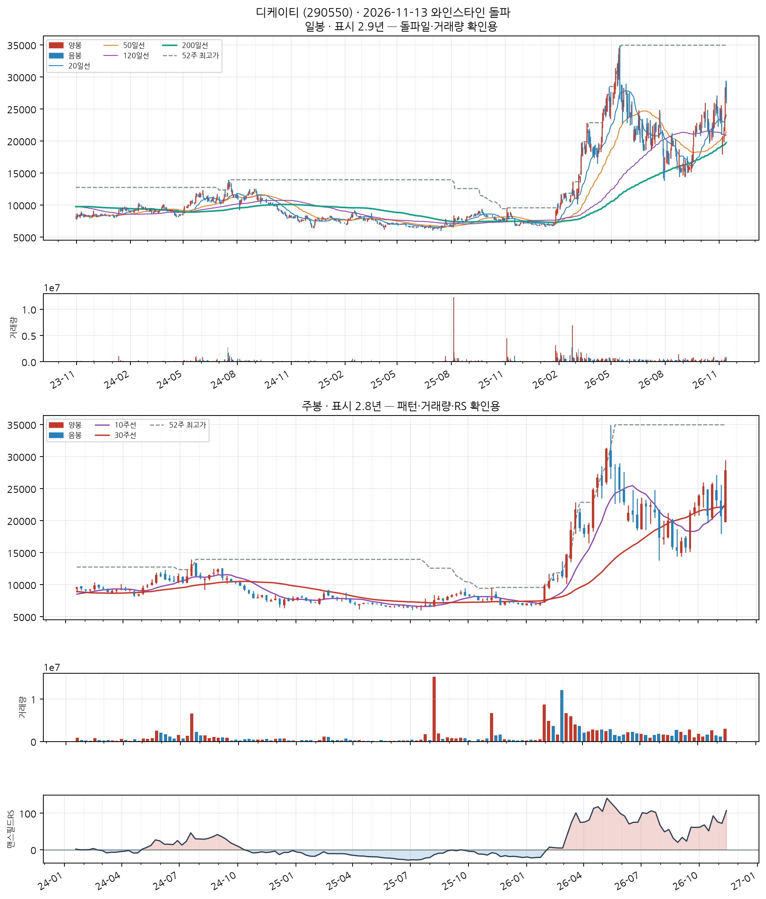
📐 차트 패턴: 약한 유사 — 컵위드핸들 돌파 확인 확신 낮음 판정 기준(PDF)
컵(16주·깊이 40.4%)+핸들(2주) 뒤 피벗 25,700를 종가로 넘었다.
가장 강한 반증 깊이: 컵 깊이 40.4% — 기준 12%~33% 밖(고변동 종목이라 50%까지 예외 허용)
경쟁 후보·더 단순한 설명 역헤드앤숄더(돌파 확인·확신 낮음) / 더 단순한 설명: 깊이 조건이 약해 단순 횡보·박스로 볼 여지가 있다(컵 깊이 40.4% — 기준 12%~33% 밖(고변동 종목이라 50%까지 예외 허용))
측정표 (주봉 종가 기준, 판정일 2026-11-13 이후 데이터 미사용)
조건별 판정
- 충족 선행 추세 — 선행 상승 +219.9% ≥ +20%
- 충족 기간 — 컵 16주 (기준 7~65주)
- 부분충족 깊이 — 컵 깊이 40.4% — 기준 12%~33% 밖(고변동 종목이라 50%까지 예외 허용)
- 충족 림 대칭 — 좌우 림 차이 11.9% ≤ 12%
- 부분충족 U자 모양 — 바닥 형태(3주 중앙값 평활): 직선 V 템플릿 오차 0.140 vs 포물선 U 템플릿 오차 0.154 → 치우침 -0.013 (V=−0.167·U=+0.167, 기각 ≤-0.05·충족 ≥+0.05) · 바닥 중심 위치 50% — V와 U 사이 — 둥근 바닥의 증거가 약함
- 충족 베이스 거래량 수축 — 컵 구간 평균 = 직전 16주 평균의 0.66배
- 부분충족 핸들 — 핸들 2주·깊이 19.6% — 15% 또는 컵 깊이 절반(20.2%) 초과
- 충족 핸들 거래량 수축 — 핸들 평균 = 컵 구간 평균의 1.00배
- 충족 최근성 — 돌파 주(2026-11-13)가 0주 전
- 충족 피벗 돌파 — 2026-11-13 주 종가 27,850 > 확인선
- 충족 돌파 거래량 — 돌파 주 거래량 = 직전 10주 평균의 1.73배
추가로 필요한 데이터 장중 고저 기준 깊이(여기 수치는 주봉 종가 기준)
패턴만으로 매수 추천이나 목표 달성 확률을 만들지 않습니다. 수치 기준은 잠정치이며 라벨 데이터로 검증되지 않았습니다.
항공 여객 운송업
업종 참고: RS 평균 79/99(업종 중 상위 1%) · 오늘 신호 2건 · 업종 평균이 코스피 대비 +40.3%p(126일), 종목별 편차 ±29%p
🧪 자체 섹터 분류(실험적, 참고용): 항공 여객 운송업 (한진칼·제주항공 등 11종목)
섹터 내 RS 순위: 9/11위 (RS 77/99)
섹터 1~3위: 한진칼(98), 제주항공(96), 진에어(95)
※ 자체 상관관계 계산(최근 1년) — 검증 시 기준업종 11개 중 8개 정확. 주 단위로 구성종목이 일부 바뀔 수 있음(주간 일치도 실측 0.53)
종가 1,790 · 거래대금 7.4억
거래량비 93.1x맨스필드RS +14.7
손절 1,665 | 목표 2,166 | 수량 5,586주
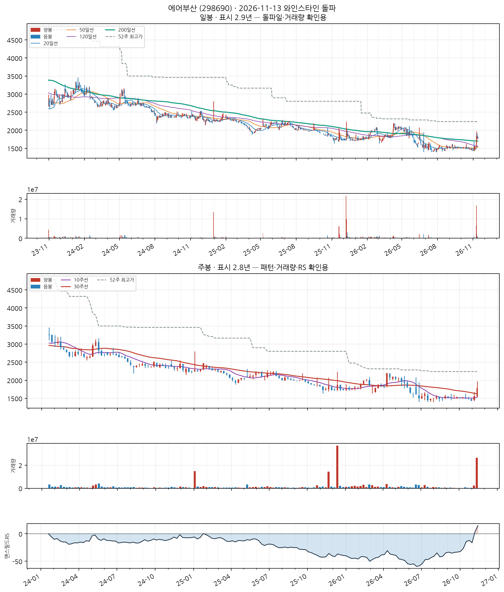
📐 차트 패턴: 약한 유사 — 컵위드핸들 형성 중 확신 낮음 판정 기준(PDF)
컵 구조(31주·깊이 34.7%)는 있으나 핸들이 아직 없다 — 형성 중.
가장 강한 반증 선행 추세: 선행 상승 +16.4% — +20%에 못 미침
경쟁 후보·더 단순한 설명 더 단순한 설명: 깊이 조건이 약해 단순 횡보·박스로 볼 여지가 있다(컵 깊이 34.7% — 기준 12%~33% 밖(고변동 종목이라 50%까지 예외 허용))
측정표 (주봉 종가 기준, 판정일 2026-11-13 이후 데이터 미사용)
조건별 판정
- 부분충족 선행 추세 — 선행 상승 +16.4% — +20%에 못 미침
- 충족 기간 — 컵 31주 (기준 7~65주)
- 부분충족 깊이 — 컵 깊이 34.7% — 기준 12%~33% 밖(고변동 종목이라 50%까지 예외 허용)
- 부분충족 림 대칭 — 좌우 림 차이 18.5% — 12% 초과
- 충족 U자 모양 — 바닥 형태(3주 중앙값 평활): 직선 V 템플릿 오차 0.273 vs 포물선 U 템플릿 오차 0.143 → 치우침 +0.130 (V=−0.167·U=+0.167, 기각 ≤-0.05·충족 ≥+0.05) · 바닥 중심 위치 69%
- 충족 베이스 거래량 수축 — 컵 구간 평균 = 직전 31주 평균의 0.63배
- 판정불가 핸들 — 오른쪽 림 이후 봉이 없어 핸들 미형성
- 충족 최근성 — 마지막 구조 피벗(2026-11-13)이 0주 전
- 미충족 피벗 돌파 — 종가가 아직 확인선 위로 안 올라옴(+0.0%)
- 판정불가 돌파 거래량 — 돌파 전
추가로 필요한 데이터 장중 고저 기준 깊이(여기 수치는 주봉 종가 기준)
패턴만으로 매수 추천이나 목표 달성 확률을 만들지 않습니다. 수치 기준은 잠정치이며 라벨 데이터로 검증되지 않았습니다.
전자부품 제조업
업종 참고: RS 평균 46/99(업종 중 상위 70%) · 오늘 신호 7건 · 업종 평균이 코스닥 대비 +12.7%p(126일), 종목별 편차 ±32%p
🧪 자체 섹터 분류(실험적, 참고용): 인텍플러스·유니퀘스트 등 30종목 (업종 혼재)
섹터 내 RS 순위: 13/30위 (RS 80/99)
섹터 1~3위: 인텍플러스(99), 유니퀘스트(98), 타이거일렉(98)
※ 자체 상관관계 계산(최근 1년) — 검증 시 기준업종 11개 중 8개 정확. 주 단위로 구성종목이 일부 바뀔 수 있음(주간 일치도 실측 0.53)
종가 43,850 · 거래대금 619억
거래량비 3.7x맨스필드RS +61.9
손절 40,780 | 목표 53,058 | 수량 228주
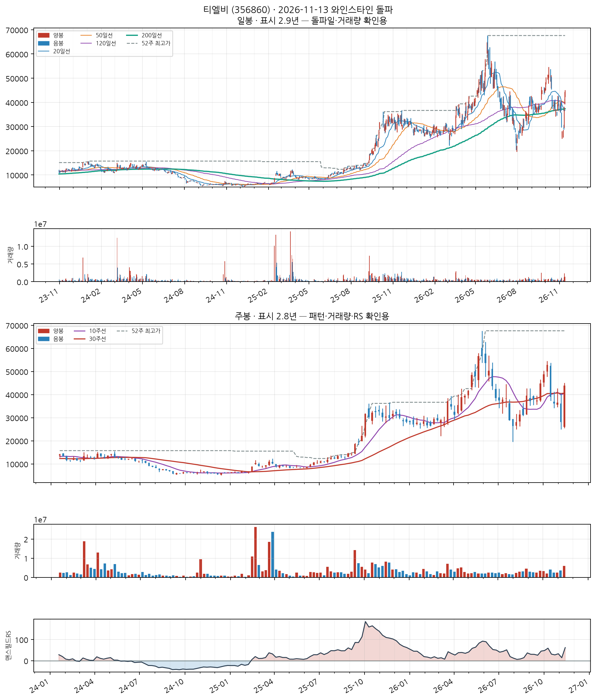
📐 차트 패턴: 약한 유사 — 이중바닥 형태 완성·미돌파 확신 낮음 판정 기준(PDF)
W 형태는 있으나 중간 고점 52,900를 아직 넘지 못했다.
가장 강한 반증 선행 추세: 선행 추세가 상승(+78.9%) — 상승 중 눌림일 수 있어 반전형 전제가 없다
경쟁 후보·더 단순한 설명 더 단순한 설명: 선행 하락이 없어 반전형이 아니라 상승 추세 중 눌림(조정)일 수 있다
측정표 (주봉 종가 기준, 판정일 2026-11-13 이후 데이터 미사용)
조건별 판정
- 미충족 선행 추세 — 선행 추세가 상승(+78.9%) — 상승 중 눌림일 수 있어 반전형 전제가 없다
- 충족 두 저점 일치 — 저점 차이 5.9% ≤ 6%
- 부분충족 중간 반등 — 중간 반등 100.4% — 30%를 넘어 W가 아니라 독립된 두 파동일 수 있음
- 충족 기간 — 베이스 24주 ≥ 7주
- 미충족 깊이 — 베이스 깊이 53.5% — 50% 초과
- 부분충족 저점2 매도 약화 — 저점2 부근 거래량 = 저점1 부근의 2.17배
- 충족 최근성 — 마지막 구조 피벗(2026-11-06)이 1주 전
- 미충족 넥라인 돌파 — 종가가 아직 확인선 위로 안 올라옴(-17.1%)
- 판정불가 돌파 거래량 — 돌파 전
추가로 필요한 데이터 장중 고저 기준 깊이(여기 수치는 주봉 종가 기준)
패턴만으로 매수 추천이나 목표 달성 확률을 만들지 않습니다. 수치 기준은 잠정치이며 라벨 데이터로 검증되지 않았습니다.
자동차 신품 부품 제조업
업종 참고: RS 평균 51/99(업종 중 상위 59%) · 오늘 신호 1건 · 업종 평균이 코스피 대비 +6.1%p(126일), 종목별 편차 ±17%p
🧪 자체 섹터 분류(실험적, 참고용): 특수 목적용 기계 제조업 (원익홀딩스·로보티즈 등 30종목)
섹터 내 RS 순위: 3/30위 (RS 74/99)
섹터 1~3위: 원익홀딩스(94), 로보티즈(77), 삼현(74)
※ 자체 상관관계 계산(최근 1년) — 검증 시 기준업종 11개 중 8개 정확. 주 단위로 구성종목이 일부 바뀔 수 있음(주간 일치도 실측 0.53)
종가 47,550 · 거래대금 357억
거래량비 4.1x맨스필드RS +36.5
손절 44,222 | 목표 57,536 | 수량 210주
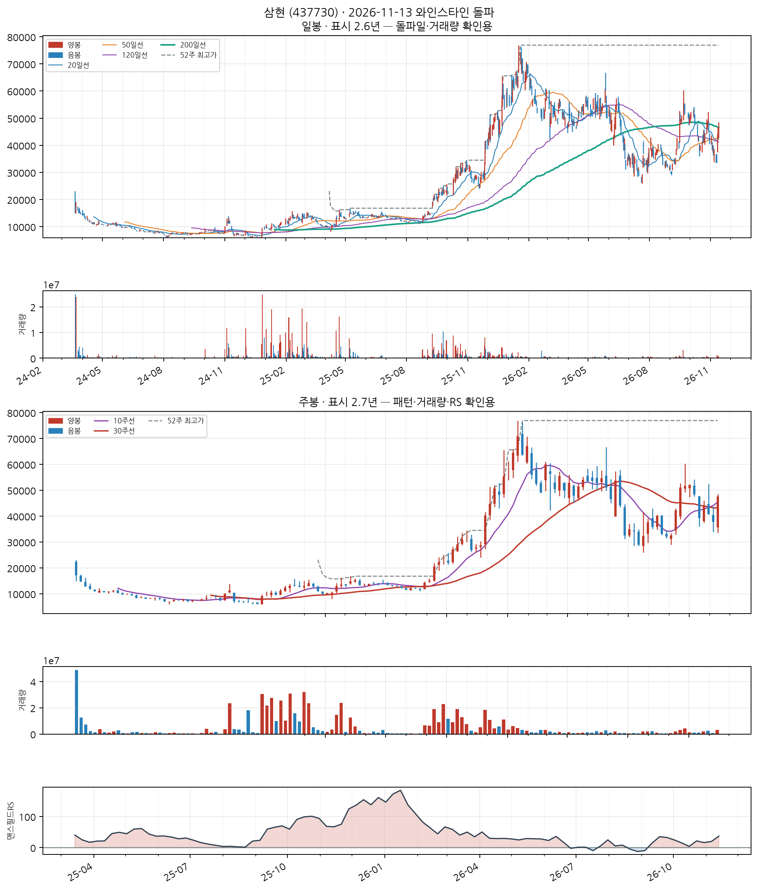
📐 차트 패턴: 약한 유사 — 역헤드앤숄더 형태 완성·미돌파 확신 낮음 판정 기준(PDF)
세 저점 구조는 있으나 넥라인(50,571)을 아직 넘지 못했다.
가장 강한 반증 선행 추세: 선행 추세가 상승(+323.0%) — 상승 중 눌림일 수 있어 반전형 전제가 없다
경쟁 후보·더 단순한 설명 더 단순한 설명: 선행 하락이 없어 반전형이 아니라 상승 추세 중 눌림(조정)일 수 있다
측정표 (주봉 종가 기준, 판정일 2026-11-13 이후 데이터 미사용)
조건별 판정
- 미충족 선행 추세 — 선행 추세가 상승(+323.0%) — 상승 중 눌림일 수 있어 반전형 전제가 없다
- 충족 머리 깊이 — 양 어깨 대비 최소 23.3% ≥ 3.5%
- 부분충족 어깨 대칭 — 어깨 높이차 23.1% — 15% 초과
- 충족 기간 — 어깨 간 37주 ≥ 6주
- 충족 시간 대칭 — 머리 좌우 기간 비 0.76
- 충족 넥라인 기울기 — 주당 -0.4%
- 부분충족 오른쪽 어깨 매도 약화 — 오른쪽 어깨 부근 거래량 = 머리 부근의 2.23배
- 충족 최근성 — 마지막 구조 피벗(2026-11-06)이 1주 전
- 미충족 넥라인 돌파 — 종가가 아직 확인선 위로 안 올라옴(-6.0%)
- 판정불가 돌파 거래량 — 돌파 전
추가로 필요한 데이터 장중 고저 기준 깊이(여기 수치는 주봉 종가 기준)
패턴만으로 매수 추천이나 목표 달성 확률을 만들지 않습니다. 수치 기준은 잠정치이며 라벨 데이터로 검증되지 않았습니다.
컴퓨터 프로그래밍, 시스템 통합 및 관리업
업종 참고: RS 평균 67/99(업종 중 상위 19%) · 오늘 신호 2건 · 업종 평균이 코스피 대비 +25.2%p(126일), 종목별 편차 ±32%p
🧪 자체 섹터 분류(실험적, 참고용): 우리로·LIG아큐버 등 22종목 (업종 혼재)
섹터 내 RS 순위: 5/22위 (RS 32/99)
섹터 1~3위: 우리로(58), LIG아큐버(46), 빛과전자(37)
※ 자체 상관관계 계산(최근 1년) — 검증 시 기준업종 11개 중 8개 정확. 주 단위로 구성종목이 일부 바뀔 수 있음(주간 일치도 실측 0.53)
종가 11,490 · 거래대금 214억
거래량비 2.4x맨스필드RS +24.2
손절 10,686 | 목표 13,903 | 수량 870주
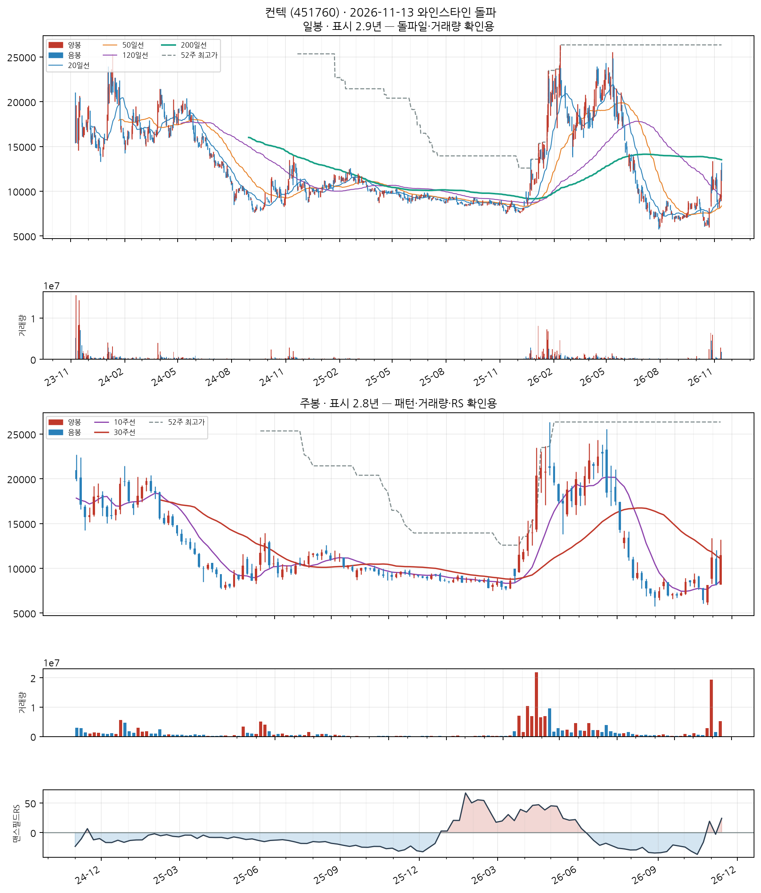
📐 차트 패턴 판정: 후보 없음 후보 없음 판정 기준(PDF)
세 패턴 모두 필수 조건을 채운 후보가 없다(가장 가까운 컵위드핸들 후보: 깊이: 컵 깊이 71.7% — 기준 12%~33%(고변동 최대 50%)를 벗어남).
가장 강한 반증 컵위드핸들: 깊이: 컵 깊이 71.7% — 기준 12%~33%(고변동 최대 50%)를 벗어남; 이중바닥: 두 저점 일치: 저점 차이 62.5% — 같은 지지대로 보기 어려움(10% 초과)
경쟁 후보·더 단순한 설명 더 단순한 설명: 최근 26주 하락 추세 지속(-37.7%) — 베이스 없음
추가로 필요한 데이터 장중 고저 기준 깊이(여기 수치는 주봉 종가 기준)
패턴만으로 매수 추천이나 목표 달성 확률을 만들지 않습니다. 수치 기준은 잠정치이며 라벨 데이터로 검증되지 않았습니다.